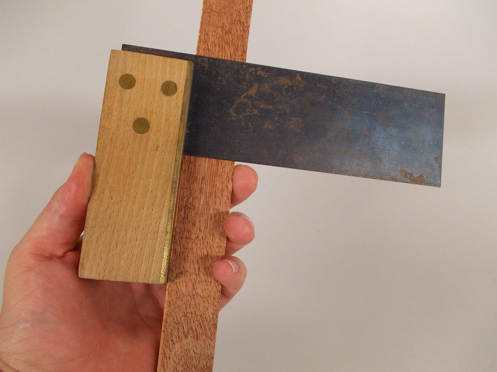
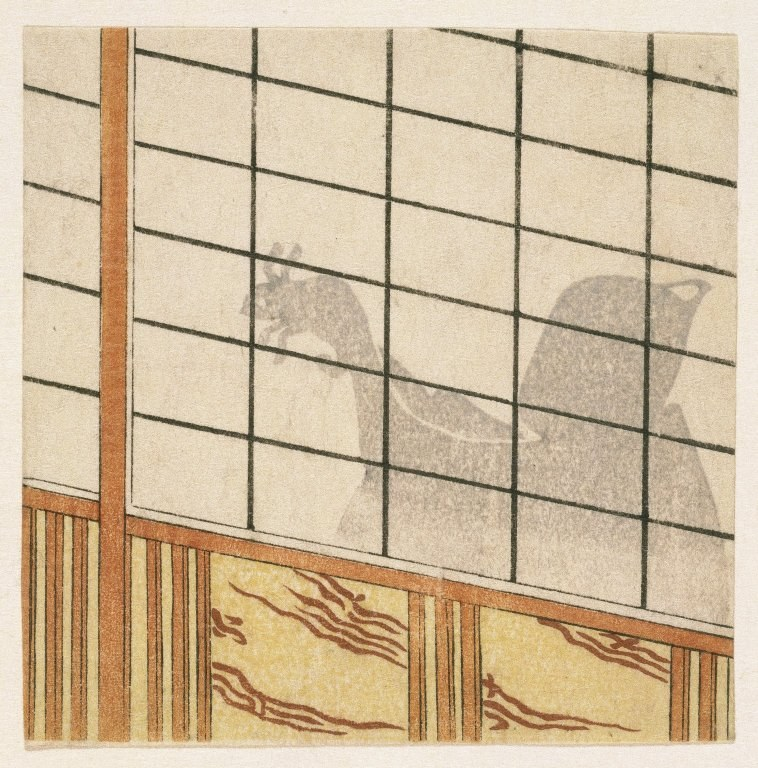

第19回
柱と梁が、水平と垂直に、直角に組まれている。
Komatta（2011年、小樽の能舞台）／CC BY 3.0／Wikimedia Commons（横長に切り出した）
第5回で「成分を掛けて足した数」として書いた内積を、「満たすべき3つの性質」として取り出し直す。その3つだけから、長さ・角・直交が決まり、「ベクトルのうち、ある方向の成分」を取り出す射影と、直交する基底を作るグラム・シュミットの方法までを、記号を省かずに1行ずつ追う。
第1回から続く約束どおり、新しい記号は緑色の枠（記号）で「①読み方 ②日本語での意味 ③省略していない書き方 ④どこで出会うか」を書く。この回の中心の省略は射影の公式（$\operatorname{proj}_{\boldsymbol u}\boldsymbol v=\frac{\langle\boldsymbol v,\boldsymbol u\rangle}{\langle\boldsymbol u,\boldsymbol u\rangle}\boldsymbol u$ を、長さ1のベクトルでは $\langle\boldsymbol v,\boldsymbol e\rangle\boldsymbol e$ まで縮める）なので、5.2 の省略の段階で S0 から S3 まで1段ずつ並べる。
内積・ノルム・成分・転置は第5回、一次結合・基底・部分空間・次元は第15回、$A\boldsymbol x$ と逆行列は第16回、ランク・核・像は第17回で説明済みである。使うたびにリンクで戻れるようにしてある。高校で習った「ベクトルの内積」「三平方の定理」も、仮定せずに一度は書く（覚えている人は飛ばしてよい）。
なお、行列式（第18回）、固有値と対称行列の対角化（第20・21回）、フーリエ級数（第36回）、最小二乗法（第47回）は、この回では予告だけにする。
最初に、この回で新しく説明する記号と、前の回で説明済みの記号を分けて並べる。右の列の「→」で説明のある場所へ飛べる。
| 記号 | 読み方 | ざっくりした意味 | 説明 |
|---|---|---|---|
| $\langle\boldsymbol u,\boldsymbol v\rangle$（内積、公理で定義し直したもの） | ユー・ブイ の内積（アングル・ユー・カンマ・ブイ・アングル） | 2つのベクトルから数を作る規則のうち、3つの性質（対称・線形・正定値）を満たすもの | →1.2 |
| $\|\boldsymbol v\|:=\sqrt{\langle\boldsymbol v,\boldsymbol v\rangle}$（内積から決まる長さ） | ノルム・ブイ | 自分自身との内積の平方根 | →2.1 |
| コーシー・シュワルツの不等式 | — | $\lvert\langle\boldsymbol u,\boldsymbol v\rangle\rvert\le\|\boldsymbol u\|\|\boldsymbol v\|$ | →2.2 |
| $\theta$（2つのベクトルのなす角） | シータ | $\cos\theta=\frac{\langle\boldsymbol u,\boldsymbol v\rangle}{\|\boldsymbol u\|\|\boldsymbol v\|}$ で決まる角 | →2.4 |
| $\boldsymbol u\perp\boldsymbol v$（直交） | ユー・ブイ は 直交する（ユー・パープ・ブイ） | 内積が0 | →3.1 |
| $W^{\perp}$（直交補空間） | ダブリュー・パープ | $W$ のどのベクトルとも直交するベクトルの全体 | →3.4 |
| 正規直交基底 | せいきちょっこうきてい | どの2本も直交し、どれも長さ1の基底 | →4.1 |
| 直交行列 $Q$（$Q^{\mathsf T}Q=I$） | ちょっこうぎょうれつ・キュー | 列が正規直交基底になっている正方行列 | →4.3 |
| $\operatorname{proj}_{\boldsymbol u}\boldsymbol v$（射影） | プロジェクション・ユー・ブイ | $\boldsymbol v$ のうち $\boldsymbol u$ の方向にある成分 | →5.2 |
| $P$（射影行列）、$P^2=P$ | しゃえいぎょうれつ・ピー | 射影を行列の積で書いたもの | →5.3 |
| グラム・シュミットの方法 | — | 基底から、正規直交基底を1本ずつ作る手順 | →6.2 |
| $A=QR$（QR分解） | キューアール・ぶんかい | $A$ を直交行列 $Q$ と上三角行列 $R$ の積に書いたもの | →6.4 |
| 記号 | 意味 | 初出 |
|---|---|---|
| $=$、$:=$ | 等しい／左の名前を右の式で決める | 第1回、第1回 |
| $\in$、$\{\ \mid\ \}$、$\mathbb R$、$\subseteq$ | 要素である／条件で集合を作る／実数全体／部分集合 | 第2回、第2回、第2回、第2回 |
| $\Rightarrow$、$\Leftrightarrow$、$\forall$、$\exists$ | ならば／同値／すべての／存在する | 第2回、第2回、第2回、第2回 |
| $\displaystyle\sum$、$\delta_{ij}$ | 総和／クロネッカーのデルタ | 第4回、第4回 |
| 太字 $\boldsymbol v$（ベクトル）、成分 $v_i$、$\boldsymbol 0$ | 数の組／その中の数／全成分が0 | 第5回、第5回、第5回 |
| $\boldsymbol a\cdot\boldsymbol b=\boldsymbol a^{\mathsf T}\boldsymbol b$（標準内積）、$\|\boldsymbol a\|$、$A^{\mathsf T}$、$I$ | 成分の積の和／長さ／転置／単位行列 | 第5回、第5回、第5回、第5回 |
| ベクトル空間、一次結合、$\operatorname{span}$、一次独立、基底、$\dim$、部分空間 | 足せて定数倍できる集まり／定数倍の和／張る空間／冗長がない／座標軸の組／基底の本数／閉じた部分 | 第15回、第15回、第15回、第15回、第15回、第15回、第15回 |
| $A\boldsymbol x$、線形写像、$AB$、$A^{-1}$ | 列の一次結合／写像／合成／逆 | 第16回、第16回、第16回、第16回 |
| $\operatorname{rank}A$、$\ker A$、$\operatorname{im}A$ | 主成分の数／$A\boldsymbol x=\boldsymbol 0$ の解全体／$A\boldsymbol x$ の全体 | 第17回、第17回、第17回 |
| $\displaystyle\int_a^b f\,\mathrm dx$（定積分） | 面積（符号つき） | 第10回 |
第5回で、内積を$\boldsymbol a\cdot\boldsymbol b:=a_1b_1+\cdots+a_nb_n$ と定めた。これで長さも、なす角も、直交も（$\boldsymbol a\cdot\boldsymbol b=0$）計算できた。ただし、この定義には前の道具ではできないことが2つある。
そこで数学では、「成分を掛けて足す」という計算の手順ではなく、その計算が満たしている性質のほうを定義にする。3つの性質を満たす規則を、すべて「内積」と呼ぶ。そうすれば、長さ・角・直交・射影の議論が、3つの性質だけを使って一度に書ける。内積の「型」がちがっても、同じ証明がそのまま使える、というのがこの回の見通しである。
図1.1 は、この回で出会う3種類の内積を並べたものである。どれも「2つのものから1つの実数を作る」規則で、中身の計算式だけが違う。
①読み方：「ユー・ブイ の内積」「アングル・ユー・カンマ・ブイ・アングル」。山かっこ $\langle\ \rangle$ はふつうの括弧ではなく、「内積という規則に入れる」しるし。
②日本語での意味：実数のベクトル空間 $V$ の2つのベクトル $\boldsymbol u,\boldsymbol v$ に実数を1つ対応させる規則で、次の3つの性質をもつもの。入れ替えても同じ（対称）、各側で、足し算と定数倍が外に出せる（線形）、自分自身との値は0以上で、0になるのは零ベクトルのときだけ（正定値）。
③省略していない書き方：$V$ を実ベクトル空間（第15回）とする。$V$ の任意の $\boldsymbol u,\boldsymbol v,\boldsymbol w$ と任意の実数 $a,b$ に対して、
が成り立つ。この3つを満たす $\langle\ ,\ \rangle$ を、$V$ の内積と呼び、内積が1つ決まった実ベクトル空間を内積空間と呼ぶ。
④どこで出会うか：機械力学（運動エネルギーの質量行列による内積、モードの直交性）、フーリエ級数（第36回）、最小二乗法（第47回）、量子力学（状態ベクトルの内積。複素数の場合は第34回）。
公理を1つずつ読む。
(I1) は、「$\boldsymbol u$ と $\boldsymbol v$ の内積」と「$\boldsymbol v$ と $\boldsymbol u$ の内積」が同じ、という約束である。第5回の内積では、各成分の積 $u_iv_i$ が $v_iu_i$ に等しい（実数の掛け算は順序によらない）ので成り立っていた。
(I2) は左側の入れ物についての線形性である。$\boldsymbol u$ と $\boldsymbol v$ を1つの一次結合 $a\boldsymbol u+b\boldsymbol v$ にしてから内積をとっても、先に内積をとってから同じ一次結合にしても結果が同じ。「足し算と定数倍を、内積の外に出してよい」という意味で、第16回の線形写像の定義と同じ形をしている。
(I3) は、「長さの2乗」にあたる量 $\langle\boldsymbol v,\boldsymbol v\rangle$ が、負にならず、$\boldsymbol 0$ のときだけ0になる、という約束である。これがあるから、2.1 で $\sqrt{\langle\boldsymbol v,\boldsymbol v\rangle}$ を「長さ」と呼べる。
(I1) と (I2) から出る性質（右側の入れ物でも線形）。1行に1操作で示す。
$$ \begin{aligned} \langle\boldsymbol w,\ a\boldsymbol u+b\boldsymbol v\rangle &= \langle a\boldsymbol u+b\boldsymbol v,\ \boldsymbol w\rangle && \text{（(I1)：入れ替える）}\\ &= a\langle\boldsymbol u,\boldsymbol w\rangle+b\langle\boldsymbol v,\boldsymbol w\rangle && \text{（(I2)：外に出す）}\\ &= a\langle\boldsymbol w,\boldsymbol u\rangle+b\langle\boldsymbol w,\boldsymbol v\rangle && \text{（(I1)：各項を入れ替える）} \end{aligned} $$
したがって、2つの入れ物のどちらでも、足し算と定数倍を外に出せる。これを双線形性と言う（「2つの入れ物で、それぞれ線形」）。特に、$\langle\boldsymbol 0,\boldsymbol v\rangle=\langle0\cdot\boldsymbol 0,\boldsymbol v\rangle=0\cdot\langle\boldsymbol 0,\boldsymbol v\rangle=0$ （(I2) で $a=0$）。零ベクトルとの内積はいつも0である。
最小の具体例（標準内積が3つの性質を満たす）：第5回の $\boldsymbol u\cdot\boldsymbol v=u_1v_1+u_2v_2$（$\mathbb R^2$）を、$\langle\boldsymbol u,\boldsymbol v\rangle$ と書いて確かめる。
(I1)：$u_1v_1+u_2v_2=v_1u_1+v_2u_2$。
(I2)：左辺 $=(au_1+bv_1)w_1+(au_2+bv_2)w_2$。 $=a(u_1w_1+u_2w_2)+b(v_1w_1+v_2w_2)$。
(I3)：$\langle\boldsymbol v,\boldsymbol v\rangle=v_1^2+v_2^2\ge0$。0になるのは、$v_1^2=0$ かつ $v_2^2=0$、つまり $v_1=v_2=0$ のときだけ。
数値でも確かめる。$a=2$、$b=-1$、$\boldsymbol u=(1,2)$、$\boldsymbol v=(3,-1)$、$\boldsymbol w=(2,5)$ として (I2)：左辺 $\langle2\boldsymbol u-\boldsymbol v,\boldsymbol w\rangle=\langle(-1,5),(2,5)\rangle=-2+25=23$。右辺 $2\langle\boldsymbol u,\boldsymbol w\rangle-\langle\boldsymbol v,\boldsymbol w\rangle=2\cdot12-1=23$ ✓。
$\mathbb R^2$ で、次の規則を考える。
$$ \langle\boldsymbol u,\boldsymbol v\rangle_w:=2u_1v_1+3u_2v_2 $$
添字の $w$ は「重み（weight）つき」を表す小さな目印で、標準内積と区別するためにつけた。成分ごとの積に、重み 2 と 3 を掛けてから足している。
(I1)：$2u_1v_1+3u_2v_2=2v_1u_1+3v_2u_2$ ✓。(I2)：$2(au_1+bv_1)w_1+3(au_2+bv_2)w_2=a(2u_1w_1+3u_2w_2)+b(2v_1w_1+3v_2w_2)$ ✓。(I3)：$\langle\boldsymbol v,\boldsymbol v\rangle_w=2v_1^2+3v_2^2\ge0$。0になるのは $v_1=v_2=0$ のときだけ（重み 2, 3 がどちらも正だから）✓。3つとも満たすので、これも内積である。
同じ2本のベクトルでも、内積が違えば結論が変わる。$\boldsymbol u=(3,2)$、$\boldsymbol v=(1,-1)$ とする。
$$ \begin{aligned} \langle\boldsymbol u,\boldsymbol v\rangle_w &= 2\cdot3\cdot1+3\cdot2\cdot(-1) && \text{（定義）}\\ &= 6-6=0 && \text{（計算）}\\ \boldsymbol u\cdot\boldsymbol v &= 3\cdot1+2\cdot(-1)=1 && \text{（標準内積）} \end{aligned} $$
重みつきの内積では0（直交）、標準内積では1（直交しない）。つまり、「直交している」はベクトルだけでなく、どの内積を使うかにも依存する。図1.2 で、「長さ 1 のベクトルの集まり」の形がどう変わるかを見る。
「ベクトル2本が直交しているかどうかは、図に描いて直角に見えるかどうかで決まる」は誤りである。図の直角は、標準内積（紙の上の普通の長さ）で見たときの直交にすぎない。力学の質量行列や、統計の分散で重みをつけた内積では、図で斜めに見えても、その内積で直交していることがある。この回では「直交」と言うたびに、どの内積かを意識する。
$[-1,1]$ で連続な関数 $f,g$ に対して、
$$ \langle f,g\rangle:=\int_{-1}^{1}f(x)\,g(x)\,\mathrm dx $$
と定める（積分は第10回）。成分ごとの積 $u_iv_i$ を、点ごとの積 $f(x)g(x)$ に取り替え、「足す」を「積分する」に取り替えた形である。
(I1)：$f(x)g(x)=g(x)f(x)$ だから積分も同じ ✓。(I2)：積分は足し算・定数倍を外に出せる（積分の線形性）✓。(I3)：$\langle f,f\rangle=\int_{-1}^{1}f(x)^2\,\mathrm dx\ge0$ ✓。0になるのは、連続な $f$ が区間全体で $f(x)^2=0$ のとき、つまり $f$ が恒等的に0のときだけ（連続でなければ、1点だけ値の違う関数が反例になるので、連続という条件が必要）。
最小の具体例：$f(x)=1$、$g(x)=x$。
$$ \begin{aligned} \langle1,x\rangle &= \int_{-1}^{1}1\cdot x\,\mathrm dx && \text{（定義）}\\ &= \Bigl[\tfrac{x^2}{2}\Bigr]_{-1}^{1} && \text{（$x$ の原始関数）}\\ &= \tfrac12-\tfrac12=0 && \text{（上端と下端を入れる）} \end{aligned} $$
0なので、$1$ と $x$ はこの内積で直交している。図1.3 のように、積 $1\cdot x$ のグラフは、$x\gt0$ の側の面積と $x\lt0$ の側の面積が、符号が逆で打ち消し合っている。
同じ内積で、$\langle1,1\rangle=\int_{-1}^{1}1\,\mathrm dx=2$、$\langle x,x\rangle=\int_{-1}^{1}x^2\,\mathrm dx=\bigl[\tfrac{x^3}{3}\bigr]_{-1}^{1}=\tfrac23$、$\langle1,x^2\rangle=\tfrac23$。関数の長さの2乗が $\langle f,f\rangle$、関数どうしの直交が $\langle f,g\rangle=0$ になる。第36回のフーリエ級数では、$\sin nx$ と $\cos mx$ がこの意味で直交していることを使う。
内積でない例：$\mathbb R^2$ で $\langle\boldsymbol u,\boldsymbol v\rangle':=u_1v_1-u_2v_2$ は、(I1)(I2) は満たす（確かめは1.3 と同じ）が、(I3) を満たさない。$\boldsymbol v=(1,1)$ とすると $\langle\boldsymbol v,\boldsymbol v\rangle'=1-1=0$ なのに $\boldsymbol v\neq\boldsymbol 0$。さらに $\boldsymbol v=(0,1)$ では $\langle\boldsymbol v,\boldsymbol v\rangle'=-1\lt0$ で、「長さの2乗」が負になる。(I3) は、「長さ」と言えるための条件だった。（この規則は相対性理論の時空の計量に現れるが、「長さの2乗が負」になるため、この回の内積ではない。）
| 書き方 | 主に使われる場所 | 注意 |
|---|---|---|
| $\boldsymbol a\cdot\boldsymbol b$ | 物理・工学の入門（$\mathbb R^n$ の標準内積） | 第5回で使った書き方。標準内積に限ることが多い |
| $\langle\boldsymbol u,\boldsymbol v\rangle$ | 線形代数・解析（この回） | どんな内積にも使える。本によっては $(\boldsymbol u,\boldsymbol v)$ |
| $\boldsymbol u^{\mathsf T}\boldsymbol v$ | 機械学習・数値計算 | 列ベクトルの転置との行列の積。標準内積のときだけ |
| $\langle\boldsymbol u\vert\boldsymbol v\rangle$ | 量子力学（第5回のブラ・ケット） | 複素数のときは、左側の入れ物に複素共役をとる流儀が多い |
実数のベクトルでは (I1) があるので「どちらの側で線形か」を気にしなくてよい。複素数（第34回）では対称性が崩れるため、本によって「第1引数で線形」「第2引数で線形」が分かれる。この回は実数だけを扱うので、(I2) は左側の入れ物で書き、右側は1.2 で導いた。
①読み方：「ノルム・ブイ」「ブイの長さ」。
②日本語での意味：自分自身との内積（長さの2乗にあたる）の、非負の平方根。
③省略していない書き方：(I3) より $\langle\boldsymbol v,\boldsymbol v\rangle\ge0$ なので平方根がとれる。$\|\boldsymbol v\|:=\sqrt{\langle\boldsymbol v,\boldsymbol v\rangle}$（非負の平方根）。標準内積なら $\|\boldsymbol v\|=\sqrt{v_1^2+\cdots+v_n^2}$ となり、第5回のノルムに一致する。
④どこで出会うか：誤差の大きさ（最小二乗法、第47回）、関数の「大きさ」$\sqrt{\int f^2}$（信号の実効値、フーリエ級数）、重みつきの誤差（重みつき最小二乗）。
確かめ：(a) $\|\boldsymbol v\|\ge0$、かつ $\|\boldsymbol v\|=0\Leftrightarrow\boldsymbol v=\boldsymbol 0$（(I3) そのもの）。(b) 定数倍：
$$ \begin{aligned} \|c\boldsymbol v\|^2 &= \langle c\boldsymbol v,\ c\boldsymbol v\rangle && \text{（ノルムの定義の2乗）}\\ &= c\langle\boldsymbol v,\ c\boldsymbol v\rangle && \text{（(I2)：左側から $c$ を出す）}\\ &= c\cdot c\langle\boldsymbol v,\boldsymbol v\rangle && \text{（双線形性：右側から $c$ を出す）}\\ &= c^2\|\boldsymbol v\|^2 && \text{（ノルムの定義の2乗）} \end{aligned} $$
両辺の非負の平方根をとって $\|c\boldsymbol v\|=\lvert c\rvert\,\|\boldsymbol v\|$。$c$ ではなく $\lvert c\rvert$ になるのは、$\sqrt{c^2}=\lvert c\rvert$ だからである（絶対値）。
数値：1.3 の重みつき内積で $\boldsymbol u=(3,2)$：$\|\boldsymbol u\|_w=\sqrt{2\cdot9+3\cdot4}=\sqrt{30}$。標準のノルムなら $\sqrt{13}$。内積が違えば、長さも違う。
第5回で、$\boldsymbol a\cdot\boldsymbol b=\|\boldsymbol a\|\|\boldsymbol b\|\cos\theta$ を導いた。$\lvert\cos\theta\rvert\le1$ だから、$\lvert\boldsymbol a\cdot\boldsymbol b\rvert\le\|\boldsymbol a\|\|\boldsymbol b\|$ のはずである。ただしこの導き方は、「$\theta$ が存在すること」を前提にしていた。一般の内積では、角の定義のほうが、この不等式を使って作られるので、不等式を先に、(I1)〜(I3) だけから証明しなければならない。
内積空間の任意の $\boldsymbol u,\boldsymbol v$ について、
$$ \lvert\langle\boldsymbol u,\boldsymbol v\rangle\rvert\le\|\boldsymbol u\|\,\|\boldsymbol v\| $$
等号が成り立つのは、一方が他方の定数倍のとき（一次従属のとき）に限る。
証明の方針を先に言う。「$\boldsymbol u$ から $\boldsymbol v$ の $t$ 倍を引いたベクトル $\boldsymbol u-t\boldsymbol v$」の長さの2乗は、(I3) により、どんな $t$ でも0以上である。この「0以上」を $t$ の2次式として見て、その最小値が0以上であることを使う。図2.1 の上の図が引き算の絵、下の図がその長さの2乗を $t$ の関数として描いた絵である。
$\boldsymbol v=\boldsymbol 0$ のときは、両辺とも0（1.2 で見たとおり $\langle\boldsymbol u,\boldsymbol 0\rangle=0$、$\|\boldsymbol 0\|=0$）なので成り立つ。以下 $\boldsymbol v\neq\boldsymbol 0$ とする。このとき (I3) より $\langle\boldsymbol v,\boldsymbol v\rangle\gt0$。実数 $t$ を、
$$ t:=\frac{\langle\boldsymbol u,\boldsymbol v\rangle}{\langle\boldsymbol v,\boldsymbol v\rangle} $$
と選ぶ（分母は正なので割れる。この選び方の理由は、図2.1 の下の図の最小の位置である）。
$$ \begin{aligned} 0 &\le \langle\boldsymbol u-t\boldsymbol v,\ \boldsymbol u-t\boldsymbol v\rangle && \text{（(I3)：自分自身との内積は0以上）}\\ &= \langle\boldsymbol u,\boldsymbol u\rangle-t\langle\boldsymbol v,\boldsymbol u\rangle-t\langle\boldsymbol u,\boldsymbol v\rangle+t^2\langle\boldsymbol v,\boldsymbol v\rangle && \text{（双線形性：4項に展開）}\\ &= \langle\boldsymbol u,\boldsymbol u\rangle-2t\langle\boldsymbol u,\boldsymbol v\rangle+t^2\langle\boldsymbol v,\boldsymbol v\rangle && \text{（(I1)：$\langle\boldsymbol v,\boldsymbol u\rangle=\langle\boldsymbol u,\boldsymbol v\rangle$）}\\ &= \langle\boldsymbol u,\boldsymbol u\rangle-2\frac{\langle\boldsymbol u,\boldsymbol v\rangle^2}{\langle\boldsymbol v,\boldsymbol v\rangle}+\frac{\langle\boldsymbol u,\boldsymbol v\rangle^2}{\langle\boldsymbol v,\boldsymbol v\rangle^2}\langle\boldsymbol v,\boldsymbol v\rangle && \text{（$t$ の式を代入）}\\ &= \langle\boldsymbol u,\boldsymbol u\rangle-\frac{\langle\boldsymbol u,\boldsymbol v\rangle^2}{\langle\boldsymbol v,\boldsymbol v\rangle} && \text{（$-2+1=-1$：同じ分数どうしをまとめた）} \end{aligned} $$
両辺に正の数 $\langle\boldsymbol v,\boldsymbol v\rangle$ を掛けて（不等号の向きは変わらない）、$\langle\boldsymbol u,\boldsymbol v\rangle^2\le\langle\boldsymbol u,\boldsymbol u\rangle\langle\boldsymbol v,\boldsymbol v\rangle=\|\boldsymbol u\|^2\|\boldsymbol v\|^2$。両辺の非負の平方根をとると $\lvert\langle\boldsymbol u,\boldsymbol v\rangle\rvert\le\|\boldsymbol u\|\|\boldsymbol v\|$。
等号は、最初の「$0\le$」が等号のとき、つまり (I3) の「$=0$ になるのは零ベクトルのときだけ」より $\boldsymbol u-t\boldsymbol v=\boldsymbol 0$、すなわち $\boldsymbol u=t\boldsymbol v$ のときに限る。□
数値で確かめる：$\boldsymbol u=(4,3)$、$\boldsymbol v=(2,1)$（標準内積）。$\langle\boldsymbol u,\boldsymbol v\rangle=11$、$\langle\boldsymbol v,\boldsymbol v\rangle=5$、$\langle\boldsymbol u,\boldsymbol u\rangle=25$。$t=\frac{11}{5}$。$\boldsymbol u-t\boldsymbol v=(4,3)-\frac{11}5(2,1)=\bigl(-\frac25,\ \frac45\bigr)$ で、長さの2乗は $\frac{4}{25}+\frac{16}{25}=\frac45$。証明の最後の式 $25-\frac{121}{5}=\frac45$ と一致する ✓。不等式は $11^2=121\le25\cdot5=125$ ✓。もう1つ：$\boldsymbol u=(1,2,3)$、$\boldsymbol v=(4,5,6)$ なら $\lvert32\rvert\le\sqrt{14}\sqrt{77}=\sqrt{1078}\approx32.83$ ✓（第5回の内積の例）。
図2.2 のように、$\boldsymbol u$ の先に $\boldsymbol v$ をつなぐと、「$\boldsymbol u+\boldsymbol v$」は三角形の第3辺になる。「三角形の1辺は、他の2辺の和以下」という高校の知識を、ベクトルの長さで書いたものが次の定理である。
$\|\boldsymbol u+\boldsymbol v\|\le\|\boldsymbol u\|+\|\boldsymbol v\|$
$$ \begin{aligned} \|\boldsymbol u+\boldsymbol v\|^2 &= \langle\boldsymbol u+\boldsymbol v,\ \boldsymbol u+\boldsymbol v\rangle && \text{（ノルムの定義の2乗）}\\ &= \langle\boldsymbol u,\boldsymbol u\rangle+2\langle\boldsymbol u,\boldsymbol v\rangle+\langle\boldsymbol v,\boldsymbol v\rangle && \text{（双線形性で展開し、(I1) で2項をまとめた）}\\ &\le \|\boldsymbol u\|^2+2\|\boldsymbol u\|\|\boldsymbol v\|+\|\boldsymbol v\|^2 && \text{（定理2.1：$\langle\boldsymbol u,\boldsymbol v\rangle\le\lvert\langle\boldsymbol u,\boldsymbol v\rangle\rvert\le\|\boldsymbol u\|\|\boldsymbol v\|$）}\\ &= (\|\boldsymbol u\|+\|\boldsymbol v\|)^2 && \text{（展開の逆）} \end{aligned} $$
両辺は0以上なので、平方根をとって不等号の向きは変わらない。□
数値：$\boldsymbol u=(3,0)$、$\boldsymbol v=(1,2)$。$\|\boldsymbol u+\boldsymbol v\|=\|(4,2)\|=\sqrt{20}\approx4.47$。$\|\boldsymbol u\|+\|\boldsymbol v\|=3+\sqrt5\approx5.24$。$4.47\le5.24$ ✓。
第5回では、図形の角 $\theta$ から $\boldsymbol a\cdot\boldsymbol b=\|\boldsymbol a\|\|\boldsymbol b\|\cos\theta$ を導いた。一般の内積空間（関数など）には「図形の角」がないので、この式を逆に使って、角を定義する。
①読み方：「シータ」。2つのベクトルの「なす角」。
②日本語での意味：「内積を、2つの長さの積で割った数」の逆余弦（$\cos$ の逆）。この数は、定理2.1 により $-1$ 以上 $1$ 以下なので、$0$ 度から $180$ 度のどこかの角の余弦として必ず書ける。
③省略していない書き方：$\boldsymbol u,\boldsymbol v$ がどちらも $\boldsymbol 0$ でないとき、
$$ \theta:=\arccos\frac{\langle\boldsymbol u,\boldsymbol v\rangle}{\|\boldsymbol u\|\,\|\boldsymbol v\|}\qquad(0\le\theta\le\pi) $$
すなわち $\cos\theta=\dfrac{\langle\boldsymbol u,\boldsymbol v\rangle}{\|\boldsymbol u\|\|\boldsymbol v\|}$ を満たす $\theta\in[0,\pi]$ で、ただ1つ決まる。
④どこで出会うか：仕事 $W=\boldsymbol F\cdot\boldsymbol d$、2つのモードの「似ている度合い」、機械学習のコサイン類似度。
割り算の分母 $\|\boldsymbol u\|\|\boldsymbol v\|$ が0でないこと（$\boldsymbol 0$ を除く）と、商が $[-1,1]$ に入ること（定理2.1）の2つがそろって初めて、$\arccos$ に入れられる。定理2.1 は、角の定義を成立させるための道具であった。図2.3 は $\cos\theta$ の値と角の対応である。
最小の具体例：$\boldsymbol u=(1,1,0)$、$\boldsymbol v=(1,0,1)$。$\langle\boldsymbol u,\boldsymbol v\rangle=1$、$\|\boldsymbol u\|=\sqrt2$、$\|\boldsymbol v\|=\sqrt2$。$\cos\theta=\frac{1}{\sqrt2\cdot\sqrt2}=\frac12$。よって $\theta=60^\circ$（$\pi/3$）。
PHOTO 1｜現実

板の縁に当てて、直角を確かめる定規である。
Luke Milburn（2014年、直角定規）／CC BY 2.0／Wikimedia Commons（縮小した）
MITATE 1｜見立て
垂直に張った縦糸に、横から糸を結んで、絨毯を織っていく。
Fulvio Spada（2007年、イラン・マハーンの絨毯織り）／CC BY-SA 2.0／Wikimedia Commons（縮小した）
動機：2つのベクトルが「互いに無関係な方向」を向いていることを、数で言いたい。図形では直角だが、関数のように図に描けないものにも使えるよう、内積で定義する。
①読み方：「ユー・ブイ は 直交する」「ユー・パープ・ブイ」。$\perp$ は「垂直」の記号で、perpendicular（パーペンディキュラー）の略。
②日本語での意味：2つのベクトルの内積が0であること。なす角が $90^\circ$（2.4 の $\cos\theta=0$）であるか、どちらかが零ベクトルであること。
③省略していない書き方：$\boldsymbol u\perp\boldsymbol v:\Longleftrightarrow\langle\boldsymbol u,\boldsymbol v\rangle=0$。（「$\Leftrightarrow$」は同値、「:」は左を右で定義する印。）使っている内積が標準内積でない場合は、「その内積について直交」と、どの内積かを添える。
④どこで出会うか：座標軸（互いに直交する $x,y,z$ 軸）、振動のモード（質量行列について直交）、フーリエ級数（$\sin nx$ と $\cos mx$）、最小二乗法（誤差の向きが説明変数に直交）。
例：$(3,4)\perp(4,-3)$（標準内積で $12-12=0$）。零ベクトルは、どのベクトルとも直交する（$\langle\boldsymbol 0,\boldsymbol v\rangle=0$、1.2）。1.3 の例で、$(3,2)$ と $(1,-1)$ は重みつき内積について直交する。1.4 の例で、関数 $1$ と $x$ は $\int_{-1}^1$ の内積について直交する。
「$\boldsymbol u\perp\boldsymbol v$ なら、どちらも零ベクトルでない」は誤りである。定義は「内積が0」なので、$\boldsymbol u=\boldsymbol 0$ でも成り立つ。「直交する2本の非零ベクトル」と言うときは、「非零」を明示する。
高校で習う「直角三角形の斜辺の2乗は、他の2辺の2乗の和」を、内積で書く。
$\boldsymbol u\perp\boldsymbol v$ ならば、$\|\boldsymbol u+\boldsymbol v\|^2=\|\boldsymbol u\|^2+\|\boldsymbol v\|^2$。
2.3 の三角不等式の証明の2行目をそのまま使う：$\|\boldsymbol u+\boldsymbol v\|^2=\langle\boldsymbol u,\boldsymbol u\rangle+2\langle\boldsymbol u,\boldsymbol v\rangle+\langle\boldsymbol v,\boldsymbol v\rangle$。直交の仮定により中央の項は $2\cdot0=0$。残りは $\|\boldsymbol u\|^2+\|\boldsymbol v\|^2$。□
数値：$\boldsymbol u=(3,0)$、$\boldsymbol v=(0,4)$。$\|\boldsymbol u+\boldsymbol v\|^2=\|(3,4)\|^2=25$。$\|\boldsymbol u\|^2+\|\boldsymbol v\|^2=9+16=25$ ✓。図3.1 は、$\boldsymbol u$ と $\boldsymbol v$ をつないでできる直角三角形である。5.5 の「最短距離」の証明は、この定理だけを使う。
逆「$\|\boldsymbol u+\boldsymbol v\|^2=\|\boldsymbol u\|^2+\|\boldsymbol v\|^2$ なら $\boldsymbol u\perp\boldsymbol v$」は正しい（証明の式から $2\langle\boldsymbol u,\boldsymbol v\rangle=0$）。一方、$\boldsymbol u\perp\boldsymbol v$ と長さが等しいことは別の話で、混同しやすい。直交は角の話、長さが等しいは大きさの話である。
第15回で、一次独立の判定は「$c_1\boldsymbol v_1+\cdots+c_k\boldsymbol v_k=\boldsymbol 0$ なら $c_1=\cdots=c_k=0$」だった。直交なら、この判定が1行で済む。
$\boldsymbol v_1,\dots,\boldsymbol v_k$ が零ベクトルでなく、どの2本も直交する（$i\neq j$ なら $\langle\boldsymbol v_i,\boldsymbol v_j\rangle=0$）ならば、$\boldsymbol v_1,\dots,\boldsymbol v_k$ は一次独立である。
$c_1\boldsymbol v_1+\cdots+c_k\boldsymbol v_k=\boldsymbol 0$ とする。番号 $j$ を1つ選び、両辺と $\boldsymbol v_j$ との内積をとる。
$$ \begin{aligned} 0 &= \langle\boldsymbol 0,\boldsymbol v_j\rangle && \text{（零ベクトルとの内積は0、1.2）}\\ &= \Bigl\langle\sum_{i=1}^kc_i\boldsymbol v_i,\ \boldsymbol v_j\Bigr\rangle && \text{（仮定：$\boldsymbol 0$ を一次結合で置き換えた）}\\ &= \sum_{i=1}^kc_i\langle\boldsymbol v_i,\boldsymbol v_j\rangle && \text{（(I2)：和と定数倍を外に出す）}\\ &= c_j\langle\boldsymbol v_j,\boldsymbol v_j\rangle && \text{（$i\neq j$ の項は直交の仮定で0。残るのは $i=j$ だけ）}\\ &= c_j\|\boldsymbol v_j\|^2 && \text{（ノルムの定義）} \end{aligned} $$
$\boldsymbol v_j\neq\boldsymbol 0$ なので $\|\boldsymbol v_j\|^2\gt0$（(I3)）。したがって $c_j=0$。$j$ は任意だったので、すべての $c_j=0$。□
図3.2 は、「$\boldsymbol v_2$ との内積をとる」と、$\boldsymbol v_1$ と $\boldsymbol v_3$ の項が消えて $c_2$ だけが残る様子を並べたものである。
確かめ：「非零」の条件がなぜ要るか。$\boldsymbol v_1=(1,0)$、$\boldsymbol v_2=\boldsymbol 0$ は（定義の上では）直交するが、$0\cdot\boldsymbol v_1+5\boldsymbol v_2=\boldsymbol 0$ のように、係数が0でない一次結合が $\boldsymbol 0$ になり、一次独立ではない。
①読み方：「ダブリュー・パープ」「ダブリューの直交補空間」。
②日本語での意味：部分空間 $W$ のベクトルすべてと直交するベクトルの集まり。
③省略していない書き方：$V$ の部分空間 $W$ に対して、$W^{\perp}:=\{\boldsymbol x\in V\mid\text{すべての }\boldsymbol w\in W\text{ について }\langle\boldsymbol x,\boldsymbol w\rangle=0\}$。（集合の書き方は第2回。）$W^{\perp}$ も部分空間である（下の確かめ）。
④どこで出会うか：連立方程式の解空間（3.4 の最後、$\ker A=(\text{行の張る空間})^{\perp}$）、最小二乗法の誤差の空間（第47回）。
確かめ（$W^{\perp}$ は部分空間）：$\boldsymbol 0\in W^{\perp}$（零ベクトルは全員と直交）。$\boldsymbol x,\boldsymbol y\in W^{\perp}$ と実数 $a,b$、任意の $\boldsymbol w\in W$ について $\langle a\boldsymbol x+b\boldsymbol y,\boldsymbol w\rangle=a\langle\boldsymbol x,\boldsymbol w\rangle+b\langle\boldsymbol y,\boldsymbol w\rangle=a\cdot0+b\cdot0=0$。よって $a\boldsymbol x+b\boldsymbol y\in W^{\perp}$。部分空間の3条件を満たす。
最小の具体例：$\mathbb R^3$（標準内積）の部分空間 $W=\operatorname{span}\{(1,1,0),(0,0,1)\}$。$\boldsymbol x=(x_1,x_2,x_3)$ が $W^{\perp}$ に入る条件は、$W$ の基底2本との内積が0（$W$ のベクトルは基底の一次結合なので、基底との内積が0なら全員と0。双線形性）：
$$ \begin{aligned} \langle\boldsymbol x,(1,1,0)\rangle &= x_1+x_2=0 && \text{（1本目）}\\ \langle\boldsymbol x,(0,0,1)\rangle &= x_3=0 && \text{（2本目）} \end{aligned} $$
よって $x_2=-x_1$、$x_3=0$。$W^{\perp}=\{t(1,-1,0)\mid t\in\mathbb R\}=\operatorname{span}\{(1,-1,0)\}$。$\dim W=2$、$\dim W^{\perp}=1$、合計 $3=n$。図3.3 は、$\mathbb R^3$ の中の平面 $W$ と、それに垂直な直線 $W^{\perp}$ である。
第17回との接続：行列 $A$ の第 $i$ 行を $\boldsymbol r_i^{\mathsf T}$ とすると、$A\boldsymbol x=\boldsymbol 0$ は「どの行も $\boldsymbol x$ と標準内積が0」、つまり「$\boldsymbol x$ は行の張る空間と直交する」と読める。したがって$\ker A$ $=(\text{行の張る空間})^{\perp}$。上の例は、$A=\begin{pmatrix}1&1&0\\0&0&1\end{pmatrix}$ の $\ker A=\{t(1,-1,0)\}$ を求めたことに他ならない。
動機：第15回で、座標を求めるには、基底の一次結合で $\boldsymbol v$ を書く係数を、連立方程式を解いて出していた。基底が「互いに直交していて、長さが1」なら、この連立方程式を解かずに、内積1回で係数が出せる（4.2）。
①読み方：「せいきちょっこうきてい」。「正規」は長さが1、「直交」は互いに内積が0、「基底」は第15回のもの。ベクトルの名前の $\boldsymbol e$ は、長さ1のベクトルによく使う文字（単位ベクトル）。
②日本語での意味：互いに内積が0で、どれも長さが1であるような基底。
③省略していない書き方：基底 $\{\boldsymbol e_1,\dots,\boldsymbol e_n\}$ について、すべての $i,j\in\{1,\dots,n\}$ で
$$ \langle\boldsymbol e_i,\boldsymbol e_j\rangle=\delta_{ij}=\begin{cases}1&(i=j)\\0&(i\neq j)\end{cases} $$
が成り立つ。（$\delta_{ij}$ はクロネッカーのデルタ。$i=j$ のとき $\langle\boldsymbol e_i,\boldsymbol e_i\rangle=\|\boldsymbol e_i\|^2=1$ が「長さ1」、$i\neq j$ のとき0が「直交」。）
④どこで出会うか：直交する座標軸（$x,y,z$ 軸）、回転した座標系、フーリエ級数、行列の対角化（第21回）。
例：(a) $\mathbb R^n$ の標準基底（第15回の標準基底）は、標準内積で正規直交。(b) $\mathbb R^2$ の $\boldsymbol e_1=\bigl(\tfrac35,\tfrac45\bigr)$、$\boldsymbol e_2=\bigl(-\tfrac45,\tfrac35\bigr)$。確かめ：$\langle\boldsymbol e_1,\boldsymbol e_1\rangle=\frac{9+16}{25}=1$、$\langle\boldsymbol e_2,\boldsymbol e_2\rangle=\frac{16+9}{25}=1$、$\langle\boldsymbol e_1,\boldsymbol e_2\rangle=\frac{-12+12}{25}=0$。3.3 の定理から一次独立で、2本なので $\mathbb R^2$ の基底（本数が次元と同じ。第15回）。これは標準の座標軸を、角 $\arctan\frac43\approx53.1^\circ$ だけ回したものである。
長さ1にする（正規化）：非零ベクトル $\boldsymbol u$ から、同じ向きの長さ1のベクトルを作るには、長さで割る：$\boldsymbol e:=\boldsymbol u/\|\boldsymbol u\|$。確かめ：$\|\boldsymbol e\|=\bigl\|\tfrac1{\|\boldsymbol u\|}\boldsymbol u\bigr\|=\tfrac1{\|\boldsymbol u\|}\|\boldsymbol u\|=1$（2.1 の $\|c\boldsymbol v\|=\lvert c\rvert\|\boldsymbol v\|$ で、$c=1/\|\boldsymbol u\|\gt0$）。
$\{\boldsymbol e_1,\dots,\boldsymbol e_n\}$ を内積空間 $V$ の正規直交基底とする。任意の $\boldsymbol v\in V$ について、
$$ \boldsymbol v=\langle\boldsymbol v,\boldsymbol e_1\rangle\boldsymbol e_1+\langle\boldsymbol v,\boldsymbol e_2\rangle\boldsymbol e_2+\cdots+\langle\boldsymbol v,\boldsymbol e_n\rangle\boldsymbol e_n=\sum_{i=1}^n\langle\boldsymbol v,\boldsymbol e_i\rangle\boldsymbol e_i $$
すなわち、$\boldsymbol v$ の座標（基底の係数）は $c_i=\langle\boldsymbol v,\boldsymbol e_i\rangle$。
基底なので、$\boldsymbol v=c_1\boldsymbol e_1+\cdots+c_n\boldsymbol e_n$ と書ける係数 $c_1,\dots,c_n$ が存在する（第15回）。番号 $j$ を選び、両辺と $\boldsymbol e_j$ との内積をとる。
$$ \begin{aligned} \langle\boldsymbol v,\boldsymbol e_j\rangle &= \Bigl\langle\sum_{i=1}^nc_i\boldsymbol e_i,\ \boldsymbol e_j\Bigr\rangle && \text{（$\boldsymbol v$ を一次結合で置き換えた）}\\ &= \sum_{i=1}^nc_i\langle\boldsymbol e_i,\boldsymbol e_j\rangle && \text{（(I2)：外に出す）}\\ &= \sum_{i=1}^nc_i\delta_{ij} && \text{（正規直交：$\langle\boldsymbol e_i,\boldsymbol e_j\rangle=\delta_{ij}$）}\\ &= c_j && \text{（$\delta_{ij}$ は $i=j$ の項だけ1）} \end{aligned} $$
よって $c_j=\langle\boldsymbol v,\boldsymbol e_j\rangle$。□
数値：4.1 の $\boldsymbol e_1,\boldsymbol e_2$ と $\boldsymbol v=(7,1)$。
$$ \begin{aligned} c_1 &= \langle\boldsymbol v,\boldsymbol e_1\rangle=7\cdot\tfrac35+1\cdot\tfrac45=\tfrac{21+4}{5}=5 && \text{（内積1回）}\\ c_2 &= \langle\boldsymbol v,\boldsymbol e_2\rangle=7\cdot\bigl(-\tfrac45\bigr)+1\cdot\tfrac35=\tfrac{-28+3}{5}=-5 && \text{（内積1回）}\\ 5\boldsymbol e_1-5\boldsymbol e_2 &= \bigl(3,4\bigr)-\bigl(-4,3\bigr)=(7,1) && \text{（確かめ：$5\boldsymbol e_1=(3,4)$、$5\boldsymbol e_2=(-4,3)$）} \end{aligned} $$
図4.1 は、この分解を方眼に描いたものである。座標の2つの係数が、それぞれ1回の内積で出ている。
「座標は内積で出る」は、基底が直交しているときだけ成り立つ。基底 $\boldsymbol b_1=(1,0)$、$\boldsymbol b_2=(1,1)$（直交しない）で $\boldsymbol v=(7,1)$ を書くと、$\boldsymbol v=6\boldsymbol b_1+1\cdot\boldsymbol b_2$（連立方程式 $c_1+c_2=7$、$c_2=1$ を解いた）で係数は $(6,1)$。ところが $\langle\boldsymbol v,\boldsymbol b_1\rangle=7$、$\langle\boldsymbol v,\boldsymbol b_2\rangle=8$ で、係数と一致しない。直交の仮定が、証明の「3行目で $i\neq j$ の項が0」を支えていた。
正規直交基底を列に並べた行列は、特別な性質をもつ。標準内積の $\mathbb R^n$ で、$\boldsymbol e_1,\dots,\boldsymbol e_n$ を列にした $n\times n$ 行列 $Q=\begin{pmatrix}\boldsymbol e_1&\cdots&\boldsymbol e_n\end{pmatrix}$ を考える。
①読み方：「ちょっこうぎょうれつ」。$Q^{\mathsf T}Q=I$ は「キュー・トランスポーズ・キュー イコール アイ」。
②日本語での意味：列ベクトルが正規直交基底になっている正方行列。$Q^{\mathsf T}$ を左から掛けると $Q$ が打ち消される（$Q^{\mathsf T}$ が $Q$ の逆行列になる）。
③省略していない書き方：実 $n\times n$ 行列 $Q$ が直交行列であるとは、$Q^{\mathsf T}Q=I$ が成り立つこと。成分で書くと、$Q$ の第 $j$ 列を $\boldsymbol q_j$ として、$(Q^{\mathsf T}Q)_{ij}=\sum_{k=1}^nQ_{ki}Q_{kj}=\boldsymbol q_i\cdot\boldsymbol q_j=\delta_{ij}$。（転置は第5回、単位行列 $I$ は第5回。）
④どこで出会うか：回転行列（第16回の回転）、対称行列の対角化（第21回）、QR分解（6.4）、特異値分解（第22回）。
なぜ $Q^{\mathsf T}Q=I$ か。第 $i$ 行 $\boldsymbol q_i^{\mathsf T}$ と第 $j$ 列 $\boldsymbol q_j$ の積が、$(Q^{\mathsf T}Q)_{ij}$（行列の積の定義）。つまり、「$Q$ の列どうしの内積」を並べた表が $Q^{\mathsf T}Q$ である。列が正規直交なら、その表は $\delta_{ij}$、すなわち単位行列。
数値：4.1 の $\boldsymbol e_1,\boldsymbol e_2$ を列にして、
$$ Q=\frac15\begin{pmatrix}3&-4\\4&3\end{pmatrix},\quad Q^{\mathsf T}Q=\frac1{25}\begin{pmatrix}3&4\\-4&3\end{pmatrix}\begin{pmatrix}3&-4\\4&3\end{pmatrix}=\frac1{25}\begin{pmatrix}9+16&-12+12\\-12+12&16+9\end{pmatrix}=\begin{pmatrix}1&0\\0&1\end{pmatrix} $$
図4.2 は、$Q^{\mathsf T}Q$ の各成分が「$Q$ の列どうしの内積」であることを、表にしたものである。
$Q^{\mathsf T}Q=I$ は、逆行列の定義（$Q^{-1}Q=I$）と同じ形なので、$Q^{-1}=Q^{\mathsf T}$。逆行列を求めるのに連立方程式を解かず、転置するだけでよい。
長さと内積を変えない。$Q$ を掛けても、長さと内積は変わらない。
$$ \begin{aligned} \langle Q\boldsymbol x,\ Q\boldsymbol y\rangle &= (Q\boldsymbol x)^{\mathsf T}(Q\boldsymbol y) && \text{（標準内積は転置と積で書ける、第5回）}\\ &= \boldsymbol x^{\mathsf T}Q^{\mathsf T}Q\,\boldsymbol y && \text{（積の転置は順序が逆：$(Q\boldsymbol x)^{\mathsf T}=\boldsymbol x^{\mathsf T}Q^{\mathsf T}$）}\\ &= \boldsymbol x^{\mathsf T}I\boldsymbol y=\boldsymbol x^{\mathsf T}\boldsymbol y=\langle\boldsymbol x,\boldsymbol y\rangle && \text{（$Q^{\mathsf T}Q=I$）} \end{aligned} $$
$\boldsymbol y=\boldsymbol x$ とすれば $\|Q\boldsymbol x\|=\|\boldsymbol x\|$。長さと内積（したがって角）が変わらない変換は、回転や鏡映（向きの反転）だけである。数値：$\boldsymbol x=(1,2)$。$Q\boldsymbol x=\frac15(3-8,\ 4+6)=(-1,2)$。$\|\boldsymbol x\|^2=5$、$\|Q\boldsymbol x\|^2=1+4=5$ ✓。図4.3 は、標準の座標軸を、$Q$ の列が決める新しい座標軸に移す様子である。
なお、$Q^{\mathsf T}Q=I$ の両辺の行列式（第18回）をとると $(\det Q)^2=1$。第18回で、直交行列の $\det$ が $+1$（回転）か $-1$（鏡映）であることを示す。
PHOTO 2｜現実
立体の人も、地面の上では、細長い影として平らに落ちる。
Rick Obst（2022年、米国オレゴン州ビバリー・ビーチ）／CC BY 2.0／Wikimedia Commons（縮小した）
MITATE 2｜見立て

障子の向こうの人は、影として、平面にだけ映る。
『暦』の浮世絵（ブルックリン美術館蔵。Commons の年代欄は1783〜1784年）／Public domain／Wikimedia Commons（縮小した）
斜面の上の物体にかかる重力を、「斜面に沿う成分」と「斜面に垂直な成分」に分ける。観測データのベクトルを、「モデルで説明できる部分」と「説明できない部分（誤差）」に分ける。どちらも、1つのベクトル $\boldsymbol v$ を、ある方向（または部分空間）の成分と、それに直交する残りの成分に分ける操作である。これが射影である。高校の物理では、$\|\boldsymbol v\|\cos\theta$ という「影の長さ」を使った。内積で書き直すと、角を使わずに済み、$n$ 次元や関数にも使える。
非零ベクトル $\boldsymbol u$ と、別のベクトル $\boldsymbol v$ が与えられたとする。$\boldsymbol v$ のうち「$\boldsymbol u$ の方向の成分」$\boldsymbol p$ を、次の2つの条件で定める。
図5.1 は、この2つの条件を絵にしたものである。$\boldsymbol v$ の先端から、$\boldsymbol u$ を通る直線へ垂線を下ろしたときの足が $\boldsymbol p$ である。
導出：(i) を (ii) に入れて、$c$ を求める。
$$ \begin{aligned} 0 &= \langle\boldsymbol v-c\boldsymbol u,\ \boldsymbol u\rangle && \text{（条件 (ii) に (i) を代入）}\\ &= \langle\boldsymbol v,\boldsymbol u\rangle-c\langle\boldsymbol u,\boldsymbol u\rangle && \text{（(I2)：展開して $c$ を外に出す）}\\ c\langle\boldsymbol u,\boldsymbol u\rangle &= \langle\boldsymbol v,\boldsymbol u\rangle && \text{（$c$ の項を左辺に移す）}\\ c &= \frac{\langle\boldsymbol v,\boldsymbol u\rangle}{\langle\boldsymbol u,\boldsymbol u\rangle} && \text{（$\boldsymbol u\neq\boldsymbol 0$ より $\langle\boldsymbol u,\boldsymbol u\rangle\gt0$ なので割れる）} \end{aligned} $$
①読み方：「プロジェクション・ユー・ブイ」「ブイの、ユー方向への射影」。proj は projection（射影）の略。「$\pi_{\boldsymbol u}(\boldsymbol v)$」「$P_{\boldsymbol u}\boldsymbol v$」と書く本もある。
②日本語での意味：$\boldsymbol v$ のうち、$\boldsymbol u$ の方向にある成分。$\boldsymbol v$ の先端から $\boldsymbol u$ を通る直線に垂線を下ろしたときの、足の位置のベクトル。
③省略していない書き方：$\boldsymbol u\neq\boldsymbol 0$ のとき、
$$ \operatorname{proj}_{\boldsymbol u}\boldsymbol v:=\frac{\langle\boldsymbol v,\boldsymbol u\rangle}{\langle\boldsymbol u,\boldsymbol u\rangle}\,\boldsymbol u $$
④どこで出会うか：力の分解（斜面の重力の分解）、最小二乗法（第47回）、フーリエ係数（第36回）、座標変換。
| 段 | 書き方 | この段で省いたもの | 省いても誤解が起きない理由 |
|---|---|---|---|
| S0 | $\operatorname{proj}_{\boldsymbol u}\boldsymbol v$ は、「$c\boldsymbol u$ の形で、$\langle\boldsymbol v-c\boldsymbol u,\boldsymbol u\rangle=0$ を満たすもの」 | （なし。条件のまま） | — |
| S1 | $\displaystyle\operatorname{proj}_{\boldsymbol u}\boldsymbol v=\frac{\langle\boldsymbol v,\boldsymbol u\rangle}{\langle\boldsymbol u,\boldsymbol u\rangle}\boldsymbol u$ | 条件を解く手順（上の4行） | 解は上の導出の通り1つに決まる（$c$ の1次方程式で、係数 $\langle\boldsymbol u,\boldsymbol u\rangle\neq0$） |
| S2 | $\displaystyle\operatorname{proj}_{\boldsymbol u}\boldsymbol v=\frac{\langle\boldsymbol v,\boldsymbol u\rangle}{\|\boldsymbol u\|^2}\boldsymbol u$ | $\langle\boldsymbol u,\boldsymbol u\rangle$ を $\|\boldsymbol u\|^2$ と書く | ノルムの定義（2.1）から $\|\boldsymbol u\|^2=\langle\boldsymbol u,\boldsymbol u\rangle$ |
| S3 | $\|\boldsymbol e\|=1$ なら $\operatorname{proj}_{\boldsymbol e}\boldsymbol v=\langle\boldsymbol v,\boldsymbol e\rangle\boldsymbol e$ | 分母の $\|\boldsymbol e\|^2$（$=1$） | 1で割っても変わらない。4.2 の座標の公式の1項と同じ |
S3 が使える（分母を省ける）のは長さ1のときだけである。長さが1でない $\boldsymbol u$ に S3 を使うと、$\|\boldsymbol u\|^2$ 倍だけ大きい誤った答えになる。以後この箱にリンクして使う。
最小の具体例：$\boldsymbol v=(4,3)$、$\boldsymbol u=(2,1)$（標準内積）。
$$ \begin{aligned} \langle\boldsymbol v,\boldsymbol u\rangle &= 4\cdot2+3\cdot1=11 && \text{（分子）}\\ \langle\boldsymbol u,\boldsymbol u\rangle &= 2\cdot2+1\cdot1=5 && \text{（分母）}\\ c &= \tfrac{11}5 && \text{（割る）}\\ \operatorname{proj}_{\boldsymbol u}\boldsymbol v &= \tfrac{11}5(2,1)=\bigl(\tfrac{22}5,\tfrac{11}5\bigr) && \text{（$\boldsymbol u$ に掛ける）}\\ \boldsymbol v-\boldsymbol p &= \bigl(4-\tfrac{22}5,\ 3-\tfrac{11}5\bigr)=\bigl(-\tfrac25,\ \tfrac45\bigr) && \text{（残り）} \end{aligned} $$
確かめ：(a) 残りと $\boldsymbol u$ の内積 $-\frac25\cdot2+\frac45\cdot1=0$ ✓（直交）。(b) ピタゴラス（定理3.1）：$\|\boldsymbol p\|^2=\frac{484+121}{25}=\frac{121}5$、$\|\boldsymbol v-\boldsymbol p\|^2=\frac{4+16}{25}=\frac45$、合計 $\frac{121+4}5=25=\|\boldsymbol v\|^2$ ✓。
図5.2 は、この足し算 $25=\frac{121}5+\frac45$ を、長さの2乗の帯で描いたものである。
特別な場合で既知の結果に戻る：2.4 の $\boldsymbol v\cdot\boldsymbol u=\|\boldsymbol v\|\|\boldsymbol u\|\cos\theta$ を使うと、$\|\operatorname{proj}_{\boldsymbol u}\boldsymbol v\|=\bigl\lvert\frac{\langle\boldsymbol v,\boldsymbol u\rangle}{\|\boldsymbol u\|^2}\bigr\rvert\|\boldsymbol u\|=\frac{\lvert\langle\boldsymbol v,\boldsymbol u\rangle\rvert}{\|\boldsymbol u\|}=\|\boldsymbol v\|\lvert\cos\theta\rvert$。高校の「影の長さ $\|\boldsymbol v\|\cos\theta$」に一致する。
(a) $\operatorname{proj}_{\boldsymbol u}\boldsymbol v$ と $\operatorname{proj}_{\boldsymbol v}\boldsymbol u$ は別のもの。前者は $\boldsymbol u$ の定数倍、後者は $\boldsymbol v$ の定数倍で、向きも長さも違う（$\boldsymbol u=(2,1)$、$\boldsymbol v=(4,3)$ で、後者は $\frac{11}{25}(4,3)$）。(b) 「$\boldsymbol p=\langle\boldsymbol v,\boldsymbol u\rangle\boldsymbol u$」と書くのは、$\boldsymbol u$ が長さ1のときだけ正しい（上の S3）。
$\operatorname{proj}_{\boldsymbol u}\boldsymbol v$ は、$\boldsymbol v$ について線形である（$\boldsymbol v$ を $a\boldsymbol v+b\boldsymbol w$ にすると、内積 $\langle\boldsymbol v,\boldsymbol u\rangle$ が (I2) で分けられる）。だから第16回の線形写像であり、行列で書ける。標準内積で $\langle\boldsymbol v,\boldsymbol u\rangle=\boldsymbol u^{\mathsf T}\boldsymbol v$ と書き、数 $\frac1{\boldsymbol u^{\mathsf T}\boldsymbol u}$ を前に出すと、
$$ \operatorname{proj}_{\boldsymbol u}\boldsymbol v=\frac{\boldsymbol u^{\mathsf T}\boldsymbol v}{\boldsymbol u^{\mathsf T}\boldsymbol u}\boldsymbol u=\frac{1}{\boldsymbol u^{\mathsf T}\boldsymbol u}\,\boldsymbol u\,(\boldsymbol u^{\mathsf T}\boldsymbol v)=\Bigl(\frac{\boldsymbol u\boldsymbol u^{\mathsf T}}{\boldsymbol u^{\mathsf T}\boldsymbol u}\Bigr)\boldsymbol v $$
2つ目の等号は、数 $\boldsymbol u^{\mathsf T}\boldsymbol v$ を $\boldsymbol u$ の後ろへ動かしただけ（数なので位置を変えてよい）。3つ目は、行列の積の結合法則（第5回・第16回）で、$\boldsymbol u(\boldsymbol u^{\mathsf T}\boldsymbol v)=(\boldsymbol u\boldsymbol u^{\mathsf T})\boldsymbol v$。
①読み方：「しゃえいぎょうれつ」「ピー」。$P^2=P$ は「ピー・にじょう イコール ピー」。
②日本語での意味：「$\boldsymbol v$ を掛けると、その射影が出てくる」行列。1度射影した結果を、もう1度射影しても変わらない（すでに直線の上にあるから）。
③省略していない書き方：$\boldsymbol u\in\mathbb R^n$（非零）に対して、$P:=\dfrac{\boldsymbol u\boldsymbol u^{\mathsf T}}{\boldsymbol u^{\mathsf T}\boldsymbol u}$。$\boldsymbol u\boldsymbol u^{\mathsf T}$ は、列ベクトル（$n\times1$）と行ベクトル（$1\times n$）の積で、$n\times n$ 行列（成分は $u_iu_j$）。分母 $\boldsymbol u^{\mathsf T}\boldsymbol u$ は数（$1\times1$）。$P\boldsymbol v=\operatorname{proj}_{\boldsymbol u}\boldsymbol v$。
④どこで出会うか：最小二乗法（第47回）、回帰の「ハット行列」、画像・信号の成分分解。
数値：$\boldsymbol u=(2,1)$。$\boldsymbol u\boldsymbol u^{\mathsf T}=\begin{pmatrix}2\\1\end{pmatrix}\begin{pmatrix}2&1\end{pmatrix}=\begin{pmatrix}4&2\\2&1\end{pmatrix}$、$\boldsymbol u^{\mathsf T}\boldsymbol u=5$。$P=\frac15\begin{pmatrix}4&2\\2&1\end{pmatrix}$。$P\boldsymbol v=\frac15\begin{pmatrix}4\cdot4+2\cdot3\\2\cdot4+1\cdot3\end{pmatrix}=\frac15\begin{pmatrix}22\\11\end{pmatrix}$ で、5.2 の射影と一致 ✓。
$P^2=P$ の確かめ：$P^2=\frac1{25}\begin{pmatrix}4&2\\2&1\end{pmatrix}\begin{pmatrix}4&2\\2&1\end{pmatrix}=\frac1{25}\begin{pmatrix}16+4&8+2\\8+2&4+1\end{pmatrix}=\frac1{25}\begin{pmatrix}20&10\\10&5\end{pmatrix}=P$ ✓。一般には、$P^2=\frac{\boldsymbol u(\boldsymbol u^{\mathsf T}\boldsymbol u)\boldsymbol u^{\mathsf T}}{(\boldsymbol u^{\mathsf T}\boldsymbol u)^2}=\frac{\boldsymbol u\boldsymbol u^{\mathsf T}}{\boldsymbol u^{\mathsf T}\boldsymbol u}=P$（真ん中の数 $\boldsymbol u^{\mathsf T}\boldsymbol u$ が分母と1つ約分される）。また $P^{\mathsf T}=P$（$(\boldsymbol u\boldsymbol u^{\mathsf T})^{\mathsf T}=(\boldsymbol u^{\mathsf T})^{\mathsf T}\boldsymbol u^{\mathsf T}=\boldsymbol u\boldsymbol u^{\mathsf T}$、積の転置は順序が逆）。$P^2=P$ と $P^{\mathsf T}=P$ の2つが、「（直交）射影行列」の特徴である。
図5.3 は、射影行列 $P$ をいろいろな点に掛けたときの動きである。落ちた点にもう一度 $P$ を掛けても動かない（$P^2=P$）。
1本の直線ではなく、平面のような部分空間 $W$ に射影したい。5.2 の条件を、$W$ に広げる。
$W$ に正規直交基底 $\{\boldsymbol e_1,\dots,\boldsymbol e_k\}$ があれば、答えは4.2 の座標の公式を $k$ 項で止めたものになる。
$\boldsymbol p:=\sum_{i=1}^k\langle\boldsymbol v,\boldsymbol e_i\rangle\boldsymbol e_i$ とすると、$\boldsymbol p\in W$ かつ $\boldsymbol v-\boldsymbol p\in W^{\perp}$。この $\boldsymbol p$ を $\boldsymbol v$ の $W$ への射影と呼ぶ。
$\boldsymbol p$ は $\boldsymbol e_i$ の一次結合なので $\boldsymbol p\in W$。残り $\boldsymbol r:=\boldsymbol v-\boldsymbol p$ について、番号 $j\in\{1,\dots,k\}$ を選ぶ。
$$ \begin{aligned} \langle\boldsymbol r,\boldsymbol e_j\rangle &= \langle\boldsymbol v,\boldsymbol e_j\rangle-\sum_{i=1}^k\langle\boldsymbol v,\boldsymbol e_i\rangle\langle\boldsymbol e_i,\boldsymbol e_j\rangle && \text{（(I2)：展開）}\\ &= \langle\boldsymbol v,\boldsymbol e_j\rangle-\langle\boldsymbol v,\boldsymbol e_j\rangle && \text{（$\langle\boldsymbol e_i,\boldsymbol e_j\rangle=\delta_{ij}$：$i=j$ の項だけ残る）}\\ &= 0 \end{aligned} $$
$\boldsymbol r$ は $W$ の基底のすべてと直交する。$W$ の任意のベクトルは基底の一次結合なので、双線形性により、$W$ のすべてのベクトルとも直交する。したがって $\boldsymbol r\in W^{\perp}$。□
最小の具体例：$W=\operatorname{span}\{(1,1,0),(0,0,1)\}$（3.4 と同じ）。正規直交基底は $\boldsymbol e_1=\frac1{\sqrt2}(1,1,0)$、$\boldsymbol e_2=(0,0,1)$（確かめ：$\langle\boldsymbol e_1,\boldsymbol e_2\rangle=0$、$\|\boldsymbol e_1\|^2=\frac12+\frac12=1$、$\|\boldsymbol e_2\|=1$）。$\boldsymbol v=(2,0,3)$ とする。
$$ \begin{aligned} \langle\boldsymbol v,\boldsymbol e_1\rangle &= \tfrac{2+0+0}{\sqrt2}=\sqrt2 && \text{（1本目との内積）}\\ \langle\boldsymbol v,\boldsymbol e_2\rangle &= 3 && \text{（2本目との内積）}\\ \boldsymbol p &= \sqrt2\cdot\tfrac1{\sqrt2}(1,1,0)+3(0,0,1)=(1,1,3) && \text{（定理5.1）}\\ \boldsymbol v-\boldsymbol p &= (1,-1,0) && \text{（残り）} \end{aligned} $$
残り $(1,-1,0)$ は、3.4 で求めた $W^{\perp}=\operatorname{span}\{(1,-1,0)\}$ に入っている ✓。図5.4 に描く。
行列で書くと：$Q:=\begin{pmatrix}\boldsymbol e_1&\cdots&\boldsymbol e_k\end{pmatrix}$（$n\times k$）とすると、$\langle\boldsymbol v,\boldsymbol e_i\rangle=\boldsymbol e_i^{\mathsf T}\boldsymbol v$ は $Q^{\mathsf T}\boldsymbol v$ の第 $i$ 成分で、$\boldsymbol p=\sum_i(\boldsymbol e_i^{\mathsf T}\boldsymbol v)\boldsymbol e_i=Q(Q^{\mathsf T}\boldsymbol v)$（$A\boldsymbol x$ は列の一次結合、第16回）。したがって射影行列は $P=QQ^{\mathsf T}$（$k=1$、$\boldsymbol e=\boldsymbol u/\|\boldsymbol u\|$ なら 5.3 の $P$ に戻る）。基底が正規直交でないときは $P=A(A^{\mathsf T}A)^{-1}A^{\mathsf T}$（$A$ の列が $W$ の基底）となる。これは第47回の最小二乗法で導く。
射影が「$\boldsymbol v$ に最も近い $W$ の点」であることを示す。最小二乗法（第47回）で「誤差を最小にする」ことが、射影を求めることと同じになる理由である。
$\boldsymbol p$ を $\boldsymbol v$ の $W$ への射影とする。$W$ の任意のベクトル $\boldsymbol w$ について、$\|\boldsymbol v-\boldsymbol w\|\ge\|\boldsymbol v-\boldsymbol p\|$。等号は $\boldsymbol w=\boldsymbol p$ のときに限る。
$$ \begin{aligned} \|\boldsymbol v-\boldsymbol w\|^2 &= \|(\boldsymbol v-\boldsymbol p)+(\boldsymbol p-\boldsymbol w)\|^2 && \text{（$-\boldsymbol p+\boldsymbol p$ を挿入）}\\ &= \|\boldsymbol v-\boldsymbol p\|^2+\|\boldsymbol p-\boldsymbol w\|^2 && \text{（ピタゴラス、定理3.1）}\\ &\ge \|\boldsymbol v-\boldsymbol p\|^2 && \text{（$\|\boldsymbol p-\boldsymbol w\|^2\ge0$）} \end{aligned} $$
2行目でピタゴラスを使えるのは、$\boldsymbol v-\boldsymbol p\in W^{\perp}$、$\boldsymbol p-\boldsymbol w\in W$（$W$ は部分空間で、$\boldsymbol p,\boldsymbol w\in W$ の差も $W$ に入る）だから、2本が直交するため。等号は $\|\boldsymbol p-\boldsymbol w\|^2=0$、すなわち $\boldsymbol w=\boldsymbol p$（(I3)）のとき。□
数値：5.2 の $\boldsymbol v=(4,3)$、$W=\operatorname{span}\{(2,1)\}$、$\boldsymbol p=(\frac{22}5,\frac{11}5)$、$\|\boldsymbol v-\boldsymbol p\|^2=\frac45=0.8$。別の点 $\boldsymbol w=(4,2)=2(2,1)\in W$：$\|\boldsymbol v-\boldsymbol w\|^2=\|(0,1)\|^2=1\ge0.8$ ✓。$\boldsymbol w=(2,1)$：$\|(2,2)\|^2=8\ge0.8$ ✓。ピタゴラスの確かめ：$\boldsymbol w=(4,2)$ で $\|\boldsymbol p-\boldsymbol w\|^2=\bigl(\frac{22}5-4\bigr)^2+\bigl(\frac{11}5-2\bigr)^2=\frac4{25}+\frac1{25}=\frac15=0.2$。$0.8+0.2=1$ ✓。
図5.5 は、直線上の3つの点 $\boldsymbol p$、$(4,2)$、$(2,1)$ までの距離を比べたものである。
4.2 の「座標が内積1回で出る」も、5.4 の「射影が内積の和で書ける」も、正規直交基底があることが条件だった。ところが、実際に手にする基底は、たいてい直交していない。たとえば、センサーを斜めに取りつけたので、3本の測定軸が互いに斜めになっている、という場合である。
そこで必要になるのが、「一次独立な $n$ 本のベクトルから、同じ空間を張る正規直交基底を作る手順」である。考え方は1つだけ。
図6.1 は、2本の場合（$\mathbb R^2$）の様子である。
①読み方：「グラム・シュミットのほうほう」（Gram–Schmidt）。人名2人（ヨルゲン・グラムとエルハルト・シュミット）にちなむ。英語では “Gram–Schmidt process”。
②日本語での意味：基底のベクトルを順番に並べ、$k$ 本目から「すでに作った正規直交ベクトルの方向の成分」をすべて引き、残りの長さを1にして、新しい正規直交ベクトルとする手順。
③省略していない書き方：$\boldsymbol a_1,\dots,\boldsymbol a_n$ を内積空間 $V$ の一次独立なベクトルとする。$k=1,2,\dots,n$ の順に、
$$ \boldsymbol u_k:=\boldsymbol a_k-\sum_{i=1}^{k-1}\langle\boldsymbol a_k,\boldsymbol e_i\rangle\,\boldsymbol e_i,\qquad \boldsymbol e_k:=\frac{\boldsymbol u_k}{\|\boldsymbol u_k\|} $$
と決める。$k=1$ のときは和が空（足す項が1つもない）なので、和は $\boldsymbol 0$ と約束し、$\boldsymbol u_1=\boldsymbol a_1$ となる。（$\boldsymbol u_k$ は「引いた残り」で、まだ長さが1とは限らない。$\boldsymbol e_k$ は長さ1にそろえたもの。和の記号は第4回。）
④どこで出会うか：QR分解（6.4）、最小二乗法（第47回）、数値計算（第50回）、関数の直交多項式（ルジャンドル多項式。演習問題の問5）。
| 段 | 書き方 | この段で省いたもの | 省いても誤解が起きない理由 |
|---|---|---|---|
| S0 | $\boldsymbol u_1=\boldsymbol a_1$。$\boldsymbol u_2=\boldsymbol a_2-\langle\boldsymbol a_2,\boldsymbol e_1\rangle\boldsymbol e_1$。$\boldsymbol u_3=\boldsymbol a_3-\langle\boldsymbol a_3,\boldsymbol e_1\rangle\boldsymbol e_1-\langle\boldsymbol a_3,\boldsymbol e_2\rangle\boldsymbol e_2$。各 $\boldsymbol e_k=\boldsymbol u_k/\|\boldsymbol u_k\|$。 | （なし。$k$ ごとに全部書いた形） | — |
| S1 | $\displaystyle\boldsymbol u_k=\boldsymbol a_k-\sum_{i=1}^{k-1}\langle\boldsymbol a_k,\boldsymbol e_i\rangle\boldsymbol e_i$ | $k=2,3,\dots$ を別々に書くこと。$\boldsymbol u_1$ の行 | 和の記号は「同じ形の項を $i=1$ から $k-1$ まで足す」の略（第4回）。$k=1$ は空の和で $\boldsymbol 0$ |
| S2 | $\displaystyle\boldsymbol u_k=\boldsymbol a_k-\sum_{i=1}^{k-1}\operatorname{proj}_{\boldsymbol e_i}\boldsymbol a_k$ | $\langle\boldsymbol a_k,\boldsymbol e_i\rangle\boldsymbol e_i$ を射影の記号に置いた | $\|\boldsymbol e_i\|=1$ なので、5.2 の省略の段階の S3 により $\operatorname{proj}_{\boldsymbol e_i}\boldsymbol a_k=\langle\boldsymbol a_k,\boldsymbol e_i\rangle\boldsymbol e_i$ |
| S3 | $\boldsymbol u_k=\boldsymbol a_k-(\boldsymbol a_k\text{ の }W_{k-1}\text{ への射影})$、ただし $W_{k-1}:=\operatorname{span}\{\boldsymbol e_1,\dots,\boldsymbol e_{k-1}\}$ | 和の中身を、部分空間への射影ひとまとまりに言い換えた | 定理5.1 により、$\sum_i\langle\boldsymbol a_k,\boldsymbol e_i\rangle\boldsymbol e_i$ は $W_{k-1}$ への射影そのもの |
S3 の読み方：「$\boldsymbol a_k$ から、それまでに作った空間への射影を引いた残り」。残りは $W_{k-1}^{\perp}$ に入る。以後、式を短く言うときはこの箱にリンクする。
$\boldsymbol a_1,\dots,\boldsymbol a_n$ が一次独立ならば、上の手順は最後まで実行でき（すべての $k$ で $\boldsymbol u_k\neq\boldsymbol 0$、割り算ができる）、次が成り立つ。
$k$ についての数学的帰納法で示す（「$k=1$ で成り立つ。$k-1$ までで成り立てば $k$ でも成り立つ」の2つを示すと、$k=1,2,3,\dots$ と順に成り立つ、という論法）。
$k=1$：$\boldsymbol a_1$ は一次独立なベクトルの1本なので $\boldsymbol 0$ ではない。$\boldsymbol u_1=\boldsymbol a_1\neq\boldsymbol 0$ で、$\|\boldsymbol u_1\|\gt0$（(I3)）。$\boldsymbol e_1=\boldsymbol a_1/\|\boldsymbol a_1\|$ の長さは1（4.1 の正規化）。$\boldsymbol e_1$ と $\boldsymbol a_1$ は定数倍の関係なので、張る空間も等しい。
$k-1$ まで成り立つと仮定して、$k$ を示す（$k\ge2$）。仮定：$\boldsymbol e_1,\dots,\boldsymbol e_{k-1}$ は正規直交で、$\operatorname{span}\{\boldsymbol e_1,\dots,\boldsymbol e_{k-1}\}=\operatorname{span}\{\boldsymbol a_1,\dots,\boldsymbol a_{k-1}\}$。
(i) $\boldsymbol u_k\neq\boldsymbol 0$。もし $\boldsymbol u_k=\boldsymbol 0$ なら、定義より $\boldsymbol a_k=\sum_{i=1}^{k-1}\langle\boldsymbol a_k,\boldsymbol e_i\rangle\boldsymbol e_i$ で、$\boldsymbol a_k$ は $\boldsymbol e_1,\dots,\boldsymbol e_{k-1}$ の一次結合。仮定により、これは $\boldsymbol a_1,\dots,\boldsymbol a_{k-1}$ の一次結合でもある。すると $\boldsymbol a_k$ が他の本数の一次結合で書けてしまい、$\boldsymbol a_1,\dots,\boldsymbol a_n$ の一次独立（第15回）に反する。したがって $\boldsymbol u_k\neq\boldsymbol 0$。
(ii) $\boldsymbol u_k$ は $\boldsymbol e_1,\dots,\boldsymbol e_{k-1}$ のすべてと直交する。番号 $j\lt k$ を選ぶ。
$$ \begin{aligned} \langle\boldsymbol u_k,\boldsymbol e_j\rangle &= \langle\boldsymbol a_k,\boldsymbol e_j\rangle-\sum_{i=1}^{k-1}\langle\boldsymbol a_k,\boldsymbol e_i\rangle\langle\boldsymbol e_i,\boldsymbol e_j\rangle && \text{（(I2)：展開）}\\ &= \langle\boldsymbol a_k,\boldsymbol e_j\rangle-\langle\boldsymbol a_k,\boldsymbol e_j\rangle && \text{（$\langle\boldsymbol e_i,\boldsymbol e_j\rangle=\delta_{ij}$：$i=j$ の項だけ残る）}\\ &= 0 \end{aligned} $$
$\boldsymbol e_k=\boldsymbol u_k/\|\boldsymbol u_k\|$ は $\boldsymbol u_k$ の定数倍なので、これも $\boldsymbol e_j$ と直交（(I2) で定数が外に出る）。長さは1。よって $\boldsymbol e_1,\dots,\boldsymbol e_k$ は正規直交。これで (a)。
(iii) 張る空間。$\boldsymbol e_k=\boldsymbol u_k/\|\boldsymbol u_k\|$ は $\boldsymbol a_k$ と $\boldsymbol e_1,\dots,\boldsymbol e_{k-1}$ の一次結合なので、$\operatorname{span}\{\boldsymbol a_1,\dots,\boldsymbol a_k\}$ に入る（$\boldsymbol e_1,\dots,\boldsymbol e_{k-1}$ は仮定により $\boldsymbol a_1,\dots,\boldsymbol a_{k-1}$ の張る空間に入る）。逆に、$\boldsymbol a_k=\boldsymbol u_k+\sum_{i\lt k}\langle\boldsymbol a_k,\boldsymbol e_i\rangle\boldsymbol e_i=\|\boldsymbol u_k\|\boldsymbol e_k+\sum_{i\lt k}\langle\boldsymbol a_k,\boldsymbol e_i\rangle\boldsymbol e_i$ なので $\operatorname{span}\{\boldsymbol e_1,\dots,\boldsymbol e_k\}$ に入る。互いの中に入るので、2つの空間は等しい。これで (b)。□
最小の具体例（$\mathbb R^2$、標準内積）：$\boldsymbol a_1=(3,1)$、$\boldsymbol a_2=(2,2)$。
$$ \begin{aligned} \boldsymbol u_1 &= \boldsymbol a_1=(3,1) && \text{（$k=1$：そのまま）}\\ \|\boldsymbol u_1\| &= \sqrt{9+1}=\sqrt{10} && \text{（長さ）}\\ \boldsymbol e_1 &= \tfrac1{\sqrt{10}}(3,1) && \text{（長さ1にする）}\\ \langle\boldsymbol a_2,\boldsymbol e_1\rangle &= \tfrac{2\cdot3+2\cdot1}{\sqrt{10}}=\tfrac8{\sqrt{10}} && \text{（$\boldsymbol a_2$ の $\boldsymbol e_1$ 方向の係数）}\\ \langle\boldsymbol a_2,\boldsymbol e_1\rangle\boldsymbol e_1 &= \tfrac8{\sqrt{10}}\cdot\tfrac1{\sqrt{10}}(3,1)=\tfrac{8}{10}(3,1)=\bigl(\tfrac{12}5,\tfrac45\bigr) && \text{（引く成分）}\\ \boldsymbol u_2 &= (2,2)-\bigl(\tfrac{12}5,\tfrac45\bigr)=\bigl(-\tfrac25,\tfrac65\bigr) && \text{（引いた残り）}\\ \|\boldsymbol u_2\|^2 &= \tfrac4{25}+\tfrac{36}{25}=\tfrac85 && \text{（長さの2乗）}\\ \boldsymbol e_2 &= \boldsymbol u_2/\|\boldsymbol u_2\|=\tfrac1{\sqrt{10}}(-1,3) && \text{（$\|\boldsymbol u_2\|=\sqrt{8/5}=\tfrac{2\sqrt{10}}5$ で割る）} \end{aligned} $$
確かめ：$\langle\boldsymbol e_1,\boldsymbol e_2\rangle=\frac{-3+3}{10}=0$ ✓、$\|\boldsymbol e_2\|^2=\frac{1+9}{10}=1$ ✓。$\operatorname{span}\{\boldsymbol e_1,\boldsymbol e_2\}=\mathbb R^2$（正規直交の2本は3.3 により一次独立で、本数が次元と同じ）。
$\mathbb R^3$ の例：$\boldsymbol a_1=(1,1,0)$、$\boldsymbol a_2=(1,0,1)$、$\boldsymbol a_3=(0,1,1)$（どの2本も直交しない。3本は一次独立）。
$$ \begin{aligned} \boldsymbol e_1 &= \tfrac1{\sqrt2}(1,1,0) && \text{（$\boldsymbol u_1=\boldsymbol a_1$、$\|\boldsymbol u_1\|=\sqrt2$）}\\ \langle\boldsymbol a_2,\boldsymbol e_1\rangle &= \tfrac{1}{\sqrt2} && \text{（$\boldsymbol a_2\cdot\boldsymbol e_1=\frac{1+0+0}{\sqrt2}$）}\\ \boldsymbol u_2 &= (1,0,1)-\tfrac1{\sqrt2}\cdot\tfrac1{\sqrt2}(1,1,0)=\bigl(\tfrac12,-\tfrac12,1\bigr) && \text{（$\tfrac12(1,1,0)=(\tfrac12,\tfrac12,0)$ を引いた）}\\ \|\boldsymbol u_2\|^2 &= \tfrac14+\tfrac14+1=\tfrac32 && \text{（長さの2乗）}\\ \boldsymbol e_2 &= \tfrac1{\sqrt6}(1,-1,2) && \text{（$\boldsymbol u_2=\tfrac12(1,-1,2)$、$\|(1,-1,2)\|=\sqrt6$）}\\ \langle\boldsymbol a_3,\boldsymbol e_1\rangle &= \tfrac1{\sqrt2},\ \ \langle\boldsymbol a_3,\boldsymbol e_2\rangle=\tfrac{0-1+2}{\sqrt6}=\tfrac1{\sqrt6} && \text{（2つの係数）}\\ \boldsymbol u_3 &= (0,1,1)-\bigl(\tfrac12,\tfrac12,0\bigr)-\bigl(\tfrac16,-\tfrac16,\tfrac13\bigr)=\bigl(-\tfrac23,\tfrac23,\tfrac23\bigr) && \text{（2つの成分を引く）}\\ \|\boldsymbol u_3\|^2 &= \tfrac49+\tfrac49+\tfrac49=\tfrac43 && \text{（長さの2乗）}\\ \boldsymbol e_3 &= \tfrac1{\sqrt3}(-1,1,1) && \text{（$\boldsymbol u_3=\tfrac23(-1,1,1)$、$\|(-1,1,1)\|=\sqrt3$）} \end{aligned} $$
確かめ（3組の内積）：$\langle\boldsymbol e_1,\boldsymbol e_2\rangle\propto1-1+0=0$、$\langle\boldsymbol e_1,\boldsymbol e_3\rangle\propto-1+1+0=0$、$\langle\boldsymbol e_2,\boldsymbol e_3\rangle\propto-1-1+2=0$。長さはどれも1。図6.2 に、3段の手順を表にまとめる。
(a) 引く成分は $\langle\boldsymbol a_k,\boldsymbol a_i\rangle$ ではなく $\langle\boldsymbol a_k,\boldsymbol e_i\rangle$。まだ直交していない $\boldsymbol a_i$ との内積を使うと、成分が直交方向に分かれない。式 $\langle\boldsymbol a_k,\boldsymbol e_i\rangle\boldsymbol e_i$ が射影の公式（5.2 の S3）であるために、$\boldsymbol e_i$ の長さが1であることが必要になっている。長さを1にそろえずに進める流儀では、各項を $\frac{\langle\boldsymbol a_k,\boldsymbol u_i\rangle}{\langle\boldsymbol u_i,\boldsymbol u_i\rangle}\boldsymbol u_i$（5.2 の S1）に取り替える。
(b) 順番を変えると、結果の基底も変わる。上の $\mathbb R^2$ の例で $\boldsymbol a_2$ から始めると、$\boldsymbol e_1=\frac1{\sqrt2}(1,1)$ から始まり、別の基底が出る（空間 $\operatorname{span}\{\boldsymbol a_1,\boldsymbol a_2\}$ は変わらない）。「正規直交基底」は1つには決まらない。
(c) 一次従属だと途中で止まる。$\boldsymbol a_3:=\boldsymbol a_1+\boldsymbol a_2=(2,1,1)$ とすると、$\boldsymbol a_3=\boldsymbol a_1+\boldsymbol a_2=\frac3{\sqrt2}\boldsymbol e_1+\frac{\sqrt6}2\boldsymbol e_2$（$\boldsymbol a_1=\sqrt2\,\boldsymbol e_1$、$\boldsymbol a_2=\frac1{\sqrt2}\boldsymbol e_1+\frac{\sqrt6}2\boldsymbol e_2$ を足した）のように $\boldsymbol e_1,\boldsymbol e_2$ の一次結合になるので、$\boldsymbol u_3=\boldsymbol 0$ になる。$\boldsymbol 0$ では割れないので手順は止まる。これは定理6.1 の (i) の裏返しで、「一次従属を見つける方法」としても使える。
6.2 の式を $\boldsymbol a_k$ について解くと、$\boldsymbol a_k$ が $\boldsymbol e_1,\dots,\boldsymbol e_k$ の一次結合として書ける。
$$ \begin{aligned} \boldsymbol a_k &= \boldsymbol u_k+\sum_{i=1}^{k-1}\langle\boldsymbol a_k,\boldsymbol e_i\rangle\boldsymbol e_i && \text{（定義 $\boldsymbol u_k=\boldsymbol a_k-\sum\cdots$ の移項）}\\ &= \|\boldsymbol u_k\|\,\boldsymbol e_k+\sum_{i=1}^{k-1}\langle\boldsymbol a_k,\boldsymbol e_i\rangle\boldsymbol e_i && \text{（$\boldsymbol u_k=\|\boldsymbol u_k\|\boldsymbol e_k$：$\boldsymbol e_k$ の定義）} \end{aligned} $$
これは「$\boldsymbol e_1,\dots,\boldsymbol e_n$ を列にした行列 $Q$ に、ある係数の列ベクトルを掛けたもの」と読める（$A\boldsymbol x$ は列の一次結合、第16回）。係数の列を並べた行列が $R$ である。
①読み方：「キューアールぶんかい」。$Q$ は直交行列によく使う文字、$R$ は上三角行列によく使う文字で、それを並べた名前である。
②日本語での意味：列が一次独立な行列 $A$ を、「列が正規直交基底になっている行列 $Q$」と「対角線より下がすべて0の行列 $R$（上三角行列）」の積に書いたもの。
③省略していない書き方：$A=\begin{pmatrix}\boldsymbol a_1&\cdots&\boldsymbol a_n\end{pmatrix}$（$m\times n$、列が一次独立）に6.2 を施して得た $\boldsymbol e_1,\dots,\boldsymbol e_n$ を $Q:=\begin{pmatrix}\boldsymbol e_1&\cdots&\boldsymbol e_n\end{pmatrix}$ とし、$n\times n$ 行列 $R$ を次で決める。
$$ R_{ij}:=\begin{cases}\langle\boldsymbol a_j,\boldsymbol e_i\rangle & (i\le j)\\[2pt] 0 & (i\gt j)\end{cases}\qquad\text{（特に }R_{jj}=\|\boldsymbol u_j\|\gt0\text{）} $$
このとき $A=QR$、$Q^{\mathsf T}Q=I$（$Q$ の列が正規直交）、$R=Q^{\mathsf T}A$。
④どこで出会うか：最小二乗法（第47回。正規方程式を作らずに解ける）、数値計算（第50回）、固有値を数値で求める「QR法」。
$A=QR$ の導出。上の $\boldsymbol a_k$ の式を、列ごとに並べる。
したがって第 $k$ 列について $\boldsymbol a_k=Q\,(R\text{ の第 }k\text{ 列})$。列を並べると $A=QR$。両辺に左から $Q^{\mathsf T}$ を掛けると $Q^{\mathsf T}A=Q^{\mathsf T}QR=IR=R$（$Q^{\mathsf T}Q=I$ は4.3）。
数値（6.3 の $\mathbb R^3$ の例）：$A=\begin{pmatrix}1&1&0\\1&0&1\\0&1&1\end{pmatrix}$（列が $\boldsymbol a_1,\boldsymbol a_2,\boldsymbol a_3$）。$R$ の成分は、6.3 で求めた内積と長さ：
$$ R=\begin{pmatrix}\sqrt2&\frac1{\sqrt2}&\frac1{\sqrt2}\\0&\frac{\sqrt6}2&\frac1{\sqrt6}\\0&0&\frac2{\sqrt3}\end{pmatrix} $$
（$R_{11}=\|\boldsymbol u_1\|=\sqrt2$、$R_{12}=\langle\boldsymbol a_2,\boldsymbol e_1\rangle=\frac1{\sqrt2}$、$R_{22}=\|\boldsymbol u_2\|=\sqrt{3/2}=\frac{\sqrt6}2$、$R_{13}=\frac1{\sqrt2}$、$R_{23}=\frac1{\sqrt6}$、$R_{33}=\|\boldsymbol u_3\|=\sqrt{4/3}=\frac2{\sqrt3}$。）列ごとに確かめる：$\boldsymbol a_2=\frac1{\sqrt2}\boldsymbol e_1+\frac{\sqrt6}2\boldsymbol e_2=\bigl(\frac12,\frac12,0\bigr)+\bigl(\frac12,-\frac12,1\bigr)=(1,0,1)$ ✓。$\boldsymbol a_3=\frac1{\sqrt2}\boldsymbol e_1+\frac1{\sqrt6}\boldsymbol e_2+\frac2{\sqrt3}\boldsymbol e_3=\bigl(\frac12,\frac12,0\bigr)+\bigl(\frac16,-\frac16,\frac13\bigr)+\bigl(-\frac23,\frac23,\frac23\bigr)=(0,1,1)$ ✓。図6.3 に、$A=QR$ の形をまとめる。
予告：第47回の最小二乗法では、$A\boldsymbol x=\boldsymbol b$ が解けないとき（式が多すぎるとき）に、$\boldsymbol b$ に最も近い $A\boldsymbol x$ を探す。これは「$\boldsymbol b$ の $\operatorname{im}A$ への射影」（5.5）を求めることに他ならず、$A=QR$ を使うと、射影行列は $P=QQ^{\mathsf T}$（5.4）、解は $R\boldsymbol x=Q^{\mathsf T}\boldsymbol b$（上三角なので、下から順に解ける）になる。
$\mathbb R^2$ の次の2つの規則は内積か。内積でなければ、どの性質が成り立たないかを答えよ。(ア) $\langle\boldsymbol u,\boldsymbol v\rangle:=4u_1v_1+u_2v_2$。(イ) $\langle\boldsymbol u,\boldsymbol v\rangle:=u_1v_1+u_1v_2+u_2v_1+u_2v_2$。
① (ア)(I1) $4u_1v_1+u_2v_2=4v_1u_1+v_2u_2$ ✓。
② (ア)(I2) 各項が $\boldsymbol u$ の成分について1次なので、$\boldsymbol u$ を $a\boldsymbol u+b\boldsymbol v$ にすると $a$ と $b$ が外に出る ✓。
③ (ア)(I3) $\langle\boldsymbol v,\boldsymbol v\rangle=4v_1^2+v_2^2\ge0$。0になるのは $v_1=v_2=0$ のときだけ ✓。(ア) は内積。
④ (イ) は $(u_1+u_2)(v_1+v_2)$ と因数分解できる。(I1)(I2) は満たす。
⑤ (イ)(I3)：$\boldsymbol v=(1,-1)$ とすると $\langle\boldsymbol v,\boldsymbol v\rangle=(1-1)^2=0$。ところが $\boldsymbol v\neq\boldsymbol 0$。(I3) の「0になるのは零ベクトルのときだけ」が成り立たない。(イ) は内積でない。
標準内積で $\boldsymbol u=(1,-1,0)$、$\boldsymbol v=(0,1,1)$ のなす角 $\theta$ を求め、コーシー・シュワルツの不等式を確かめよ。また、$\boldsymbol u$ と直交するベクトル $(a,a,b)$ をすべて求めよ。
① $\langle\boldsymbol u,\boldsymbol v\rangle=0+(-1)+0=-1$、$\|\boldsymbol u\|=\sqrt2$、$\|\boldsymbol v\|=\sqrt2$。
② $\cos\theta=\dfrac{-1}{\sqrt2\cdot\sqrt2}=-\dfrac12$。$0\le\theta\le\pi$ で $\cos\theta=-\frac12$ となるのは $\theta=\frac{2\pi}3=120^\circ$（鈍角）。
③ 不等式：$\lvert-1\rvert=1\le\sqrt2\cdot\sqrt2=2$ ✓。
④ $\langle\boldsymbol u,(a,a,b)\rangle=a-a+0=0$。$a,b$ がどんな値でも内積は0。したがって $(a,a,b)$ はすべて $\boldsymbol u$ と直交する。
標準内積で $\boldsymbol v=(3,1,2)$ を $\boldsymbol u=(1,2,2)$ の方向に射影せよ。残りが $\boldsymbol u$ と直交することを確かめ、$\boldsymbol v$ から直線 $\operatorname{span}\{\boldsymbol u\}$ までの距離を求めよ。
① $\langle\boldsymbol v,\boldsymbol u\rangle=3+2+4=9$、$\langle\boldsymbol u,\boldsymbol u\rangle=1+4+4=9$。
② $c=\frac99=1$ なので $\boldsymbol p=1\cdot\boldsymbol u=(1,2,2)$。
③ 残り $\boldsymbol r=\boldsymbol v-\boldsymbol p=(2,-1,0)$。$\langle\boldsymbol r,\boldsymbol u\rangle=2-2+0=0$ ✓。
④ 距離は定理5.2 により $\|\boldsymbol r\|=\sqrt{4+1+0}=\sqrt5\approx2.24$。ピタゴラス（定理3.1）の確かめ：$\|\boldsymbol p\|^2+\|\boldsymbol r\|^2=9+5=14=9+1+4=\|\boldsymbol v\|^2$ ✓。
$W=\operatorname{span}\{\boldsymbol a_1,\boldsymbol a_2\}$、$\boldsymbol a_1=(1,0,1)$、$\boldsymbol a_2=(0,1,1)$ の正規直交基底をグラム・シュミットで作り、$\boldsymbol v=(1,1,1)$ の $W$ への射影 $\boldsymbol p$ と残り $\boldsymbol r$ を求めよ。
① $\|\boldsymbol a_1\|=\sqrt2$、$\boldsymbol e_1=\frac1{\sqrt2}(1,0,1)$。
② $\langle\boldsymbol a_2,\boldsymbol e_1\rangle=\frac1{\sqrt2}$、$\boldsymbol u_2=(0,1,1)-\frac1{\sqrt2}\cdot\frac1{\sqrt2}(1,0,1)=(0,1,1)-(\frac12,0,\frac12)=(-\frac12,1,\frac12)$。
③ $\|\boldsymbol u_2\|^2=\frac14+1+\frac14=\frac32$。$\boldsymbol e_2=\frac1{\sqrt6}(-1,2,1)$。確かめ：$\langle\boldsymbol e_1,\boldsymbol e_2\rangle\propto-1+0+1=0$ ✓。
④ $\langle\boldsymbol v,\boldsymbol e_1\rangle=\frac2{\sqrt2}=\sqrt2$、$\langle\boldsymbol v,\boldsymbol e_2\rangle=\frac{-1+2+1}{\sqrt6}=\frac2{\sqrt6}$。
⑤ $\boldsymbol p=\sqrt2\cdot\frac1{\sqrt2}(1,0,1)+\frac2{\sqrt6}\cdot\frac1{\sqrt6}(-1,2,1)=(1,0,1)+\frac13(-1,2,1)=\bigl(\frac23,\frac23,\frac43\bigr)$。$\boldsymbol r=\boldsymbol v-\boldsymbol p=\bigl(\frac13,\frac13,-\frac13\bigr)$。
⑥ 確かめ：$\langle\boldsymbol r,\boldsymbol a_1\rangle=\frac13-\frac13=0$ ✓、$\langle\boldsymbol r,\boldsymbol a_2\rangle=\frac13-\frac13=0$ ✓。$\boldsymbol r$ は $W$ の基底2本と直交するので $W^{\perp}$ に入る（$W^{\perp}=\operatorname{span}\{(1,1,-1)\}$）。
$A=\begin{pmatrix}3&2\\1&2\end{pmatrix}$ を $A=QR$ と分解せよ。
① 列は $\boldsymbol a_1=(3,1)$、$\boldsymbol a_2=(2,2)$。これは6.3 の最初の例で、$\boldsymbol e_1=\frac1{\sqrt{10}}(3,1)$、$\boldsymbol e_2=\frac1{\sqrt{10}}(-1,3)$。
② $R_{11}=\|\boldsymbol u_1\|=\sqrt{10}$、$R_{12}=\langle\boldsymbol a_2,\boldsymbol e_1\rangle=\frac8{\sqrt{10}}$、$R_{21}=0$、$R_{22}=\|\boldsymbol u_2\|=\sqrt{8/5}=\frac{2\sqrt{10}}5$。
③ $Q=\frac1{\sqrt{10}}\begin{pmatrix}3&-1\\1&3\end{pmatrix}$、$R=\begin{pmatrix}\sqrt{10}&\frac8{\sqrt{10}}\\0&\frac{2\sqrt{10}}5\end{pmatrix}$。
④ 確かめ（1列目）：$Q$ の1列目 $\times R_{11}$ $=\frac{\sqrt{10}}{\sqrt{10}}(3,1)=(3,1)=\boldsymbol a_1$ ✓。（2列目）：$\frac8{\sqrt{10}}\boldsymbol e_1+\frac{2\sqrt{10}}5\boldsymbol e_2=\frac{8}{10}(3,1)+\frac{2}{5}(-1,3)=\bigl(\frac{12}5,\frac45\bigr)+\bigl(-\frac25,\frac65\bigr)=(2,2)=\boldsymbol a_2$ ✓。$Q^{\mathsf T}Q=\frac1{10}\begin{pmatrix}9+1&-3+3\\-3+3&1+9\end{pmatrix}=I$ ✓。
$\langle\boldsymbol u,\boldsymbol v\rangle=3\cdot1\cdot2+2\cdot(-1)=6-2=4$。
$\|\boldsymbol u\|=\sqrt{3\cdot1^2+2^2}=\sqrt7$、$\|\boldsymbol v\|=\sqrt{3\cdot2^2+(-1)^2}=\sqrt{13}$。
不等式：$\lvert4\rvert\le\sqrt7\sqrt{13}=\sqrt{91}\approx9.54$ ✓。
(1) $1\cdot3+2\cdot0+3\cdot(-1)=3+0-3=0$。内積が0なので直交する（3.1）。
(2) $1\cdot3+k\cdot(-1)+2\cdot1=5-k=0$ より $k=5$。確かめ：$(1,5,2)\cdot(3,-1,1)=3-5+2=0$ ✓。
$\langle\boldsymbol v,\boldsymbol u\rangle=5$、$\langle\boldsymbol u,\boldsymbol u\rangle=2$。$c=\frac52$。$\boldsymbol p=\frac52(1,1)=(\frac52,\frac52)$。
$\boldsymbol r=(5,0)-(\frac52,\frac52)=(\frac52,-\frac52)$。$\langle\boldsymbol r,\boldsymbol u\rangle=\frac52-\frac52=0$ ✓。
長さ：$\|\boldsymbol e_1\|^2=\frac{1+4+4}9=1$、$\|\boldsymbol e_2\|^2=\frac{4+1+4}9=1$、$\|\boldsymbol e_3\|^2=\frac{4+4+1}9=1$。直交：$\langle\boldsymbol e_1,\boldsymbol e_2\rangle=\frac{2+2-4}9=0$、$\langle\boldsymbol e_1,\boldsymbol e_3\rangle=\frac{2-4+2}9=0$、$\langle\boldsymbol e_2,\boldsymbol e_3\rangle=\frac{4-2-2}9=0$。3本が一次独立（3.3）で、本数は次元 3 と同じなので、基底（第15回）。
座標（定理4.1）：$c_1=\langle\boldsymbol v,\boldsymbol e_1\rangle=\frac{3}{3}=1$、$c_2=\frac{6}3=2$、$c_3=\frac63=2$。
確かめ：$1\boldsymbol e_1+2\boldsymbol e_2+2\boldsymbol e_3=\frac13\bigl(1+4+4,\ 2+2-4,\ 2-4+2\bigr)=\frac13(9,0,0)=(3,0,0)$ ✓。
(1) $\langle1,x^2-\frac13\rangle=\int_{-1}^1\bigl(x^2-\frac13\bigr)\mathrm dx=\bigl[\frac{x^3}3-\frac x3\bigr]_{-1}^{1}=\bigl(\frac13-\frac13\bigr)-\bigl(-\frac13+\frac13\bigr)=0$。直交する。
(2) $\int_{-1}^1\bigl(x^4-\frac23x^2+\frac19\bigr)\mathrm dx=\frac25-\frac23\cdot\frac23+\frac29=\frac25-\frac49+\frac29=\frac25-\frac29=\frac{18-10}{45}=\frac8{45}$。
(3) $\langle x^2,1\rangle=\frac23$、$\langle1,1\rangle=2$。係数 $c=\frac{2/3}2=\frac13$。射影は $\frac13\cdot1$、残りは $x^2-\frac13$。これは (1) の関数そのもので、グラム・シュミットの $k=2$ 段（$\boldsymbol u_2=\boldsymbol a_2-\operatorname{proj}\boldsymbol a_2$）の結果と同じ。（なお $x$ は $1$ とも $x^2$ とも奇偶が違うので直交する。$1,\ x,\ x^2-\frac13$ がルジャンドル多項式の始まりである。）
$\|\boldsymbol a_1\|=\sqrt3$、$\boldsymbol e_1=\frac1{\sqrt3}(1,1,1)$。
$\langle\boldsymbol a_2,\boldsymbol e_1\rangle=\frac2{\sqrt3}$。引く成分：$\frac2{\sqrt3}\cdot\frac1{\sqrt3}(1,1,1)=\frac23(1,1,1)$。
$\boldsymbol u_2=(1,1,0)-\frac23(1,1,1)=\bigl(\frac13,\frac13,-\frac23\bigr)=\frac13(1,1,-2)$。$\|\boldsymbol u_2\|=\frac13\sqrt6$。$\boldsymbol e_2=\frac1{\sqrt6}(1,1,-2)$。
確かめ：$\langle\boldsymbol e_1,\boldsymbol e_2\rangle\propto1+1-2=0$ ✓。$\boldsymbol a_2=\frac2{\sqrt3}\boldsymbol e_1+\frac{\sqrt6}3\boldsymbol e_2=\frac23(1,1,1)+\frac13(1,1,-2)=(1,1,0)$ ✓。
$\boldsymbol u\boldsymbol u^{\mathsf T}=\begin{pmatrix}1&2\\2&4\end{pmatrix}$、$\boldsymbol u^{\mathsf T}\boldsymbol u=5$。$P=\frac15\begin{pmatrix}1&2\\2&4\end{pmatrix}$。
$P^2=\frac1{25}\begin{pmatrix}1+4&2+8\\2+8&4+16\end{pmatrix}=\frac1{25}\begin{pmatrix}5&10\\10&20\end{pmatrix}=P$ ✓。成分が対称なので $P^{\mathsf T}=P$ ✓。
$P\boldsymbol v=\frac15(3-2,\ 6-4)=\bigl(\frac15,\frac25\bigr)$。$(I-P)\boldsymbol v=\boldsymbol v-P\boldsymbol v=\bigl(\frac{14}5,-\frac75\bigr)$。
$\langle(I-P)\boldsymbol v,\boldsymbol u\rangle=\frac{14}5-\frac{14}5=0$ ✓。
$Q^{\mathsf T}Q=\begin{pmatrix}\cos\theta&\sin\theta\\-\sin\theta&\cos\theta\end{pmatrix}\begin{pmatrix}\cos\theta&-\sin\theta\\\sin\theta&\cos\theta\end{pmatrix}=\begin{pmatrix}\cos^2\theta+\sin^2\theta&-\cos\theta\sin\theta+\sin\theta\cos\theta\\-\sin\theta\cos\theta+\cos\theta\sin\theta&\sin^2\theta+\cos^2\theta\end{pmatrix}=\begin{pmatrix}1&0\\0&1\end{pmatrix}$。
よって $Q^{-1}=Q^{\mathsf T}=\begin{pmatrix}\cos\theta&\sin\theta\\-\sin\theta&\cos\theta\end{pmatrix}$（角 $-\theta$ の回転）。
$\theta=30^\circ$：$Q\boldsymbol v=(2\cos30^\circ,\ 2\sin30^\circ)=(\sqrt3,1)$。$\|Q\boldsymbol v\|^2=3+1=4=\|\boldsymbol v\|^2$ ✓。
$\|\boldsymbol u+\boldsymbol v\|^2=\|\boldsymbol u\|^2+2\langle\boldsymbol u,\boldsymbol v\rangle+\|\boldsymbol v\|^2$（2.3 の証明の2行目）。 $\boldsymbol v$ を $-\boldsymbol v$ に取り替えると $\|\boldsymbol u-\boldsymbol v\|^2=\|\boldsymbol u\|^2-2\langle\boldsymbol u,\boldsymbol v\rangle+\|\boldsymbol v\|^2$（双線形性）。
2式を足すと、$\pm2\langle\boldsymbol u,\boldsymbol v\rangle$ が打ち消し合い、$2\|\boldsymbol u\|^2+2\|\boldsymbol v\|^2$。□
$P^2=QQ^{\mathsf T}QQ^{\mathsf T}=Q(Q^{\mathsf T}Q)Q^{\mathsf T}=QIQ^{\mathsf T}=QQ^{\mathsf T}=P$。
$P^{\mathsf T}=(QQ^{\mathsf T})^{\mathsf T}=(Q^{\mathsf T})^{\mathsf T}Q^{\mathsf T}=QQ^{\mathsf T}=P$。
$(I-P)^2=I-2P+P^2=I-2P+P=I-P$、$(I-P)^{\mathsf T}=I-P^{\mathsf T}=I-P$。$P(I-P)=P-P^2=P-P=O$。□
(1) $\langle\boldsymbol b,\boldsymbol 1\rangle=5$、$\langle\boldsymbol 1,\boldsymbol 1\rangle=3$。射影は $\frac53\boldsymbol 1=(\frac53,\frac53,\frac53)$。
(2) 残り $\boldsymbol r=\boldsymbol b-\frac53\boldsymbol 1=\bigl(-\frac23,\frac13,\frac13\bigr)$。成分の和 $-\frac23+\frac13+\frac13=0$ ✓（$\boldsymbol r\perp\boldsymbol 1$ とは、成分の和が0ということ）。
(3) $\sum_i(b_i-c)^2=\|\boldsymbol b-c\boldsymbol 1\|^2$。$c\boldsymbol 1$ は直線 $W=\operatorname{span}\{\boldsymbol 1\}$ の点を動く。定理5.2 により、これを最小にするのは $c\boldsymbol 1=\boldsymbol p$、すなわち $c=\frac{\langle\boldsymbol b,\boldsymbol 1\rangle}{\langle\boldsymbol 1,\boldsymbol 1\rangle}=\frac{b_1+b_2+b_3}3$（平均）。最小値は $\|\boldsymbol r\|^2=\frac49+\frac19+\frac19=\frac23$。□


.jpg){kind=link}

.jpg){kind=link}